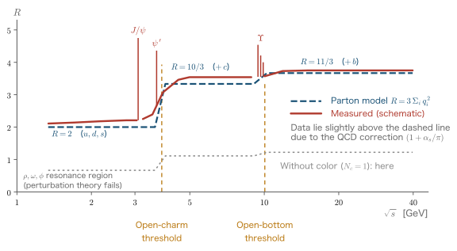
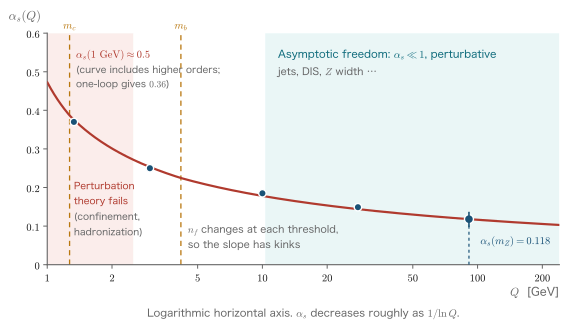

Chapter 11Quark Electrodynamics and Chromodynamics
In the previous chapter we obtained quantum electrodynamics (QED). Simply by combining three building blocks—external lines, vertices, and propagators—we can calculate Mott scattering, Compton scattering, and pair annihilation. Moreover, the results agree with experiment to ten significant figures, as in the case of $g-2$. It is the most precise theory humanity has ever had.
In this chapter we apply that same machinery to quarks. Quarks carry electric charge, so we can begin naively by using QED as it stands. Let us call this “quark electrodynamics.” Remarkably, this alone explains the rate of hadron production in $e^+e^-$ collisions, and from it we can read off, as an experimental value, that there are three color degrees of freedom. On the theory side there is the story that “color was introduced to save the Pauli exclusion principle” (Chapter 7, Section 7.6.1); on the experimental side there is the story that “the production rate is three times larger.” Here the two meet exactly.
Next, we push an experiment in which electrons strike protons from weak momentum transfer to strong momentum transfer. At low energy the proton looks like a “spread-out charge distribution,” and its Fourier transform is the form factor. This is exactly the same concept as the atomic form factor in X-ray diffraction, so it is not a tool that materials scientists meet for the first time. As the momentum transfer is increased, however, the form factor disappears, and instead we begin to see elastic scattering from “something pointlike.” This is the parton, that is, the quark. Even the fact that its spin is $1/2$ is confirmed experimentally by a single equation, the Callan–Gross relation.
Then we move on to the dynamics of color, QCD. The Feynman rules of QCD are obtained simply by multiplying those of QED by a color factor. When we carry that color-factor calculation through to the end, we find
$$ \braket{\bm{T}_1\cdot\bm{T}_2} = \begin{cases} -\dfrac{4}{3} & (q\bar q\ \text{singlet: attractive}) \\[4pt] +\dfrac{1}{6} & (q\bar q\ \text{octet: repulsive}) \\[4pt] -\dfrac{2}{3} & (qq\ \text{antitriplet: attractive}) \\[4pt] +\dfrac{1}{3} & (qq\ \text{sextet: repulsive}) \end{cases} $$Four numbers come out. Only the singlet and the antitriplet are attractive, and this is precisely the microscopic explanation of why “only mesons ($q\bar q$) and baryons ($qqq$) exist in nature.” Merely by lining up eight $3\times3$ matrices with paper and pencil, the classification of hadrons comes out.
Finally we treat asymptotic freedom. In QED, vacuum polarization screens the charge, so the effective charge looks larger at shorter distances. In QCD, because gluons couple to themselves, the sign is reversed and antiscreening occurs. As a result the coupling constant becomes small at high energy and diverges at low energy. This structure of “running” obeys an equation of the same form as the renormalization group of the Kondo effect in condensed matter physics (in the one-loop approximation), and at the end of this chapter we show the correspondence by equations.
- The derivation of the $R$ ratio $=\sigma(e^+e^-\to\text{hadrons})/\sigma(e^+e^-\to\mu^+\mu^-)=3\sum_i q_i^2$ and its staircase structure ($2\to10/3\to11/3$)
- That the factor 3 in front of $R$ directly measures the number of color degrees of freedom
- The form factor $F(\qq)=\int\rho(\bm{r})\ee^{\ii\qq\cdot\bm{r}}\dd^3r$, and obtaining the proton radius $0.81$ fm from the dipole form $G_E=(1+Q^2/0.71\,\mathrm{GeV^2})^{-2}$
- The structure of the Rosenbluth formula and how to separate $G_E$ and $G_M$ experimentally
- The kinematics of deep inelastic scattering ($Q^2,\nu,x,y,W$), Bjorken scaling, and the structure functions $F_1,F_2$
- The parton model: $F_2(x)=\sum_i q_i^2\,x f_i(x)$, and the fact that the Callan–Gross relation $F_2=2xF_1$ is evidence for quark spin $1/2$
- The Gell-Mann matrices $\lambda^a$, the $SU(3)$ generators $T^a=\lambda^a/2$, and the QCD vertex $-\ii g_s\gamma^\mu(\lambda^a/2)$
- The complete calculation of color factors: the Fierz identity and Casimir’s trick, and the reason why “only mesons and baryons are bound”
- Gluon emission and three-jet events, and measuring $\alpha_s$ from jet rates
- The sign of the $\beta$ function $\beta_0=11-\frac{2}{3}n_f$, antiscreening, the formula for $\alpha_s(Q^2)$, $\Lambda_{\rm QCD}$, and obtaining $\alpha_s(1\ \mathrm{GeV})$ numerically from $\alpha_s(m_Z)=0.118$
- That the renormalization group and dimensional transmutation have the same structure as the Kondo temperature, the difference between screening and antiscreening, and the methodological identity of lattice QCD and first-principles calculations
11.1 Hadron Production in $e^+e^-$ Collisions — The $R$ Ratio
11.1.1 Why are $e^+e^-$ collisions special?
If we want to study the strong interaction, why collide electrons and positrons? At first sight this seems a detour. However, $e^+e^-$ collisions have three decisive advantages that other experiments lack.
Why? The reason $e^+e^-$ collisions are a “clean laboratory”
- The initial state is simple. Both the electron and the positron are pointlike particles with no internal structure. When protons are collided with each other, what actually collides are the quarks and gluons inside them, so what hit what can be known only probabilistically. In $e^+e^-$ there is no such ambiguity.
- The initial state is color-neutral. Neither the electron nor the positron has color. Therefore all the color of the hadrons appearing in the final state was created in the course of the collision. We can trace “where the color came from.”
- The center-of-mass energy can be chosen freely. Since $\sqrt{s}=2E_{\rm beam}$ can be varied continuously, we can cross the production thresholds of new quarks one by one. This is the star of this section.
In short, $e^+e^-$ collisions are an apparatus that prepares a “high-purity sample” for the strong interaction. In materials science, it is like growing and measuring a single crystal rather than a polycrystal.
11.1.2 Definition of the $R$ ratio
In Chapter 10, as the first application of QED, we carried the calculation of $e^+e^-\to\mu^+\mu^-$ through to the end in Section 10.4. The result, in the limit $\sqrt{s}\gg m_\mu$, was
$$ \begin{equation} \sigma(e^+e^-\to\mu^+\mu^-) = \frac{4\pi\alpha^2}{3s} \label{eq:11-sigmamumu} \end{equation} $$Here $s=(p_{e^-}+p_{e^+})^2$ is the square of the center-of-mass energy.
Example: The $\mu^+\mu^-$ production cross section at $\sqrt{s}=10$ GeV
Insert $s=100\ \mathrm{GeV^2}$ and $\alpha=1/137.036$ into Eq. \eqref{eq:11-sigmamumu}:
$$ \sigma = \frac{4\pi}{3}\cdot\frac{(1/137.036)^2}{100\ \mathrm{GeV^2}} = 2.231\times10^{-6}\ \mathrm{GeV^{-2}} $$To convert $\mathrm{GeV^{-2}}$ in natural units to an area, we need only multiply by $(\hbar c)^2=0.3894\ \mathrm{GeV^2\,mbarn}$ (Appendix B, Section B.3.2):
$$ \sigma = 2.231\times10^{-6}\times0.3894\ \mathrm{mbarn} = 8.69\times10^{-7}\ \mathrm{mbarn} = 0.869\ \mathrm{nb} $$Collected in an easy-to-remember form, this is
$$ \sigma(e^+e^-\to\mu^+\mu^-) \simeq \frac{86.9\ \mathrm{nb}}{s/\mathrm{GeV^2}} $$This is a formula used for mental arithmetic at particle-physics experiments, and it gives the “$\mu$-pair unit (the scale of $R=1$).”
Now let us turn the same machinery toward quarks. The $e^+e^-$ pair creates a virtual photon, and it becomes a quark pair $q\bar q$. The structure of the Feynman diagram is exactly the same as in the $\mu^+\mu^-$ case; the only differences are the charge of the final-state particles and the color degrees of freedom. So we take the ratio.
Definition: The $R$ ratio
$$ \begin{equation} R(s) \equiv \frac{\sigma(e^+e^-\to \text{hadrons})}{\sigma(e^+e^-\to \mu^+\mu^-)} \label{eq:11-Rdef} \end{equation} $$Since the denominator is known exactly in QED, $R$ is “the hadron production rate measured with the $\mu$ pair as the yardstick.” Both $\alpha$ and $s$ cancel in the ratio, so only the properties of the final state remain in $R$. This ratio is the one we introduced in Chapter 10, Section 10.4.5, as “this cross section becomes the yardstick,” and in this section we put it at center stage.
11.1.3 Derivation of $R=3\sum_i q_i^2$
Derivation: The parton-level formula for the $R$ ratio
Step 1: Match up the diagrams. The amplitude of $e^+e^-\to\mu^+\mu^-$, which we wrote down in Chapter 10, Section 10.2.2 and calculated in Section 10.4, was
$$ \mathcal{M} = \frac{g_e^2}{q^2}\,\big[\bar v(p_2)\gamma^\mu u(p_1)\big]\big[\bar u(p_3)\gamma_\mu v(p_4)\big] $$(with $g_e=\sqrt{4\pi\alpha}$). If we replace the final state $\mu^-\mu^+$ by $q\bar q$, what changes is only the coupling constant of the lower vertex. The charge of the $\mu$ is $-1$ (in units of $e$) and the charge of quark $i$ is $q_i e$, so the amplitude is multiplied by $q_i$.
Step 2: The cross section is the square of the amplitude. Therefore
$$ \sigma(e^+e^-\to q_i\bar q_i) = q_i^2\,\sigma(e^+e^-\to\mu^+\mu^-) $$Here we have assumed that the quark mass is negligible compared with $\sqrt{s}$ (just above threshold this approximation is poor. If the mass is retained, the factor $\beta(3-\beta^2)/2$ derived in Chapter 10 multiplies the result, and furthermore there are resonances near threshold, so perturbation theory itself cannot be used. See Figure 11.1).
Step 3: Sum over color. A quark has three colors: red, green, and blue. As final states of $e^+e^-\to q\bar q$, the three possibilities $r\bar r$, $g\bar g$, and $b\bar b$ are counted as separate final states. The photon is indifferent to color (the electromagnetic interaction does not change color), so the amplitude has the same magnitude for any color. Since the initial state is color-neutral, the color of the final state must also cancel, and a quark of color $c$ is paired with an antiquark of color $\bar c$. Therefore the cross section is tripled:
$$ \sigma(e^+e^-\to q_i\bar q_i) = N_c\, q_i^2\,\sigma_{\mu\mu}, \qquad N_c=3 $$Step 4: Sum over quark species. Production occurs for all flavors $i$ whose $2m_i$ lies below the center-of-mass energy. Moreover, the produced quarks cannot fly out singly (because of confinement) and always turn into hadrons with 100% probability (this is called hadronization). Hadronization is a nonperturbative process that occurs with probability $1$ and does not change the size of the total cross section (see the Caution below), so we may count “the number of times a quark pair was created = the number of hadronic events.” Hence
This is the desired formula. Note that only QED was used in the derivation. QCD has not appeared at all yet.
Caution: Why can we “ignore hadronization”?
The argument in Step 4 may look a little like sleight of hand. After the quark flies out, the process in which it emits many gluons and becomes a bundle of $\pi$ mesons and $K$ mesons is clearly strongly coupled and cannot be calculated by perturbation theory. Why, then, is the total cross section not affected?
The key is the separation of time scales. The time for the $q\bar q$ pair to be produced is $\sim1/\sqrt{s}$, and the time required for hadronization is $\sim1/\Lambda_{\rm QCD}\approx1\ \mathrm{fm}/c$; if $\sqrt{s}\gg\Lambda_{\rm QCD}$, the former is overwhelmingly faster. The slow process cannot change “how many times pairs were made,” which was fixed by the fast process (the total probability is 1). This is called quark–hadron duality.
However, this holds only for the total cross section. The breakdown of the final-state particles (how many $\pi$’s, how many $K$’s) does not come out of perturbation theory.
11.1.4 The staircase of $R$
Equation \eqref{eq:11-Rformula} predicts that each time $\sqrt{s}$ is raised, a new quark “lights up” and $R$ increases in a staircase fashion. The quark charges are $+2/3$ for $u,c,t$ and $-1/3$ for $d,s,b$. Let us compute in order.
| Region of $\sqrt{s}$ | Flavors involved | $\sum_i q_i^2$ | $R=3\sum q_i^2$ | $R$ (if there were no color, $N_c=1$) | Approximate measured value |
|---|---|---|---|---|---|
| $1.5$–$3$ GeV | $u,d,s$ | $\frac49+\frac19+\frac19=\frac69$ | $2$ | $2/3$ | $\approx2.1$–$2.2$ |
| $5$–$10$ GeV | $u,d,s,c$ | $\frac69+\frac49=\frac{10}{9}$ | $10/3\approx3.33$ | $10/9\approx1.11$ | $\approx3.6$ |
| $11$–$40$ GeV | $u,d,s,c,b$ | $\frac{10}{9}+\frac19=\frac{11}{9}$ | $11/3\approx3.67$ | $11/9\approx1.22$ | $\approx3.6$–$3.9$ |
| $\gtrsim350$ GeV (not yet reached) | $+\,t$ | $\frac{11}{9}+\frac49=\frac{15}{9}$ | $5$ | $5/3$ | — |
Comparing the fifth and sixth columns of Table 11.1, the message of the experiment is clear. If color is not taken into account, the prediction is only $1/3$ of the measured value. The $R$ ratio tells us the number of colors not through a theoretical motivation such as the Pauli problem of the $\Delta^{++}$ (Chapter 7, Section 7.6.1), but as a direct counting experiment. Moreover, the value is neither $2$ nor $4$, but $3$. If we divide the measured $3.6$–$3.9$ directly by $\sum_i q_i^2=11/9$, we get $N_c=2.9$–$3.2$, with a slight scatter, but this deviation is explained by the QCD correction $(1+\alpha_s/\pi)$ of the next subsection, and the prediction including the correction, $3.83$, falls in the middle of the measurements. Including that, $N_c=3$ is confirmed to a precision of a few percent.

11.1.5 The QCD correction — why the measurement comes slightly higher
Looking closely at Figure 11.1, the red measured line lies slightly above the blue dashed line. In Table 11.1 as well, against the parton prediction $2$ the measurement is $2.1$–$2.2$, and against $10/3=3.33$ it is $3.6$, and so on. This deviation of a few percent is not an error; it is physics.
The produced quark can emit one gluon on its way out ($e^+e^-\to q\bar q g$). Since the final state is still hadrons, this too is counted as a hadronic event. Its contribution acts at first order in $\alpha_s$, and calculation gives
That the coefficient takes the simple form of just $\alpha_s/\pi$, “one over pi,” is a famous result of QCD, and conversely this formula is also used as a tool for measuring $\alpha_s$.
Example: Matching the measurement by including the QCD correction
Let us evaluate Eq. \eqref{eq:11-Rqcd} numerically in each of the three energy regions (the values of $\alpha_s$ are taken from the running coupling constant obtained by the one-loop calculation of Section 11.6 together with threshold matching. The PDG values including higher orders are about 10% larger than these on the low-energy side, and at $3$ GeV they are about $0.25$).
| Region | Representative $\sqrt{s}$ | $\alpha_s$ | $3\sum q_i^2$ | $\times(1+\alpha_s/\pi)$ | Measured |
|---|---|---|---|---|---|
| $u,d,s$ | $3$ GeV | $0.23$ | $2$ | $2.15$ | $\approx2.2$ |
| $+c$ | $7$ GeV | $0.19$ | $3.33$ | $3.53$ | $\approx3.6$ |
| $+b$ | $30$ GeV | $0.14$ | $3.67$ | $3.83$ | $\approx3.9$ |
In every case the agreement is to a few percent. Moreover, $\alpha_s$ is not a quantity used here for the first time; it is a value determined independently from entirely different experiments (jet rates, $\tau$ decay, deep inelastic scattering). This is one of the grounds on which QCD is said to be “correct.”
Caution: Does the staircase of $R$ really reach “$5$ at the $t$ quark”?
The last row of Table 11.1 states “$R=5$ at $\sqrt{s}\gtrsim350$ GeV,” but this is not actually observed. There are two reasons. First, the $t$ quark has an extremely short lifetime of $\sim5\times10^{-25}$ s (because $m_t=172.6$ GeV is large, $t\to bW$ is tremendously fast), so it decays before it hadronizes. Second, in that energy region the contribution of the $Z$ boson (Chapter 12) is comparable to photon exchange, and the very premise of this section, “single-photon exchange,” does not hold. In fact, in the neighborhood of $\sqrt{s}=m_Z$, $R$ jumps up because of the $Z$ resonance, but how high it goes depends on how the denominator is taken. If the denominator is taken to be the measured $\mu$-pair cross section (which itself includes the $Z$ resonance), then $R\simeq\Gamma_{\rm had}/\Gamma_{\mu\mu}=20.8$, but if, following the definition in Eq. \eqref{eq:11-Rdef}, the denominator is taken to be the QED pointlike cross section $4\pi\alpha^2/3s$, then as the ratio of $\sigma_{\rm had}^{\rm peak}=41.5$ nb to $\sigma_{\mu\mu}^{\rm QED}(m_Z)=86.9/8315=0.0104$ nb, it reaches $R\sim4\times10^3$ (the PDG plot of $R$ uses this definition).
The arguments of this section can be used inside the window “$2\ \mathrm{GeV}\lesssim\sqrt{s}\lesssim40\ \mathrm{GeV}$,” where $\sqrt{s}$ is away from resonances and is much smaller than $m_Z$. Every physical formula has a range of applicability.
11.2 From Elastic Electron–Proton Scattering to Deep Inelastic Scattering
The $R$ ratio told us the number and charges of the quarks, but it says nothing about how they are distributed inside the proton. To see that, we must strike the proton directly with electrons. Electrons interact only through QED, so the “way they strike” is completely understood. This is, so to speak, a familiar setup for materials scientists: measuring an unknown sample with a known probe.
11.2.1 Scattering from a point charge: the Mott cross section
As a reference for comparison, we first write down the case in which the proton is a structureless point particle. The cross section for relativistic electron scattering from a point charge of mass $M$ that has charge $+e$ but whose magnetic moment (the effect of the target spin) is neglected (the Mott cross section) is
$$ \begin{equation} \left(\frac{\dd\sigma}{\dd\Omega}\right)_{\rm Mott} = \frac{\alpha^2}{4E^2\sin^4(\theta/2)}\,\cos^2\!\frac{\theta}{2}\cdot\frac{E'}{E} \label{eq:11-mott} \end{equation} $$Here $E$ is the incident electron energy, $E'$ is the energy after scattering, and $\theta$ is the scattering angle. This is the ultrarelativistic limit of the heavy-target Mott formula $\propto[1-\beta^2\sin^2(\theta/2)]$ derived in Section 10.5.2 of Chapter 10 (as $\beta\to1$ the square bracket becomes $\cos^2(\theta/2)$), multiplied by the factor $E'/E$ due to the recoil of the target. Taking the three factors apart makes the structure clear.
Physical Meaning: The three factors of the Mott cross section
- $\dfrac{\alpha^2}{4E^2\sin^4(\theta/2)}$: This is exactly the Rutherford cross section (the $\sin^{-4}(\theta/2)$ dependence). It is the classical result for scattering from a Coulomb field and originates in $1/q^4$ ($q^2=-4EE'\sin^2(\theta/2)$).
- $\cos^2(\theta/2)$: The factor due to the electron spin. A relativistic electron conserves helicity, so scattering straight backward ($\theta=\pi$) is forbidden. This is expressed by $\cos^2(\theta/2)\to0$ as $\theta\to\pi$.
- $E'/E$: The factor due to the recoil of the target. If the target is heavy, $E'\simeq E$ and the factor is close to 1.
Nothing “proton-like” has yet entered this formula. All that has entered is the target charge $+e$, the recoil, and the spin of the electron. If the target is a spin-$1/2$ Dirac particle, a term $2\tau\tan^2(\theta/2)$ due to its magnetic moment is added (Section 11.2.4).
11.2.2 Form factors
The real proton is not a point. Its charge is spread out in space. A nonrelativistic argument captures the essence, so let us begin there.
Derivation: Scattering from an extended charge distribution and the form factor
Step 1: The scattering amplitude in the Born approximation. In the first Born approximation, the amplitude for elastic scattering by a potential $V(\bm{r})$ is
$$ f(\qq) = -\frac{m}{2\pi}\int V(\bm{r})\,\ee^{\ii\qq\cdot\bm{r}}\,\dd^3r, \qquad \qq \equiv \pp_{\rm in}-\pp_{\rm out} $$($\qq$ is the momentum transfer). That is, the amplitude is the Fourier transform of the potential.
Step 2: Writing the potential in terms of the charge distribution. The electrostatic potential created by the charge density $\rho(\bm{r})$ (normalized to $\int\rho\,\dd^3r=1$) satisfies the Poisson equation $\nabla^2\phi=-Ze\rho/\epsilon_0$. For the incident electron (charge $-e$), $V=-e\phi$.
Step 3: The Fourier transform of a convolution becomes a product. Since $\phi$ is the convolution of $\rho$ with the Coulomb kernel $1/(4\pi\epsilon_0 r)$, in Fourier space it becomes the product of the two. Using the fact that the Fourier transform of the Coulomb kernel is $1/\qq^2$, we obtain
$$ f(\qq) = f_{\rm point}(\qq)\times F(\qq), \qquad F(\qq) \equiv \int \rho(\bm{r})\,\ee^{\ii\qq\cdot\bm{r}}\,\dd^3r $$Here $f_{\rm point}$ is the Rutherford amplitude for a point charge ($\rho=\delta^3(\bm{r})$).
Step 4: The cross section is the square of the amplitude. Therefore
$F(\qq)$ is called the form factor. It is nothing other than “the Fourier transform of the charge distribution.”
Step 5: Expansion for small $q$. Expand $\ee^{\ii\qq\cdot\bm{r}}$ and take the angular average for a spherically symmetric $\rho$ ($\braket{(\qq\cdot\bm{r})^2}=q^2r^2/3$):
$$ F(\qq) = \int\rho\left(1+\ii\qq\cdot\bm{r}-\tfrac12(\qq\cdot\bm{r})^2+\cdots\right)\dd^3r = 1 - \frac{q^2}{6}\braket{r^2} + \cdots $$The first term is the normalization, and from the coefficient of the second term the charge radius can be read off:
$$ \begin{equation} \braket{r^2} = -6\left.\frac{\dd F}{\dd q^2}\right|_{q^2=0} \label{eq:11-radius} \end{equation} $$Connection to Materials Science: The form factor is the same thing as the atomic form factor of X-ray and neutron diffraction
Readers who looked at Eq. \eqref{eq:11-formfactor} and thought “I have seen this before” are right. The atomic form factor in X-ray diffraction is defined as
$$ f(\qq) = \int \rho_e(\bm{r})\,\ee^{\ii\qq\cdot\bm{r}}\,\dd^3r $$where $\rho_e$ is the electron density in the atom. Only the symbols have changed, $\rho\to\rho_e$ and $F\to f$; the formula is exactly the same. The physics is the same as well, and it comes down to a single line: “the scattering amplitude is the Fourier transform of the density distribution of the scatterer.”
Let us make a correspondence table.
| Electron–proton scattering | X-ray diffraction | Neutron diffraction | |
|---|---|---|---|
| Probe | Electron (couples via $\alpha$) | Photon (Thomson scattering) | Neutron (nuclear force, magnetic) |
| Scatterer | Charge distribution in the proton $\rho(\bm{r})$ | Electron density of the atom $\rho_e(\bm{r})$ | Nucleus (point) / unpaired-electron spin density |
| Form factor | $G_E(Q^2)$ | $f(\qq)$ | Nuclear: $b$ (independent of $q$) / magnetic: $f_m(\qq)$ |
| Value at $q\to0$ | $1$ (proton charge) | $Z$ (atomic number) | $b$ / $\mu$ (magnetic moment) |
| Measure of spatial extent | $\braket{r^2}^{1/2}=0.84$ fm | $\sim0.5$–$1$ Å | Nuclear: $\sim10^{-5}$ Å (can be regarded as a point) |
| Typical $q$ | $1$ GeV$/c\sim5\ \mathrm{fm^{-1}}$ | $\sim1$–$10\ \mathrm{\AA^{-1}}$ | $\sim1$–$10\ \mathrm{\AA^{-1}}$ |
In neutron diffraction we learn that “the nuclear form factor is a constant $b$ independent of $q$” because the nucleus looks like nothing but a point compared with the neutron wavelength. The same thing happens in electron–proton scattering. While the momentum transfer is small, the proton looks extended ($G_E$ falls with $Q^2$), but as $Q^2$ is raised, the pointlike constituents inside the proton eventually become visible. No form factor multiplies the scattering from such a constituent, and the cross section stops falling with $Q^2$. This is the Bjorken scaling of Section 11.2.6, and the logic is exactly the same as “the nucleus looks like a point in neutron diffraction.”
In short, electron–proton scattering is what a materials scientist does in crystal structure analysis (reconstructing the real-space density distribution from the $q$ dependence of the scattered intensity), carried out on a scale $10^5$ times finer. The tools are the same; only what we see differs.
11.2.3 The dipole form factor and the proton radius
The electric form factor of the proton measured in experiments follows the form below surprisingly well in the range $Q^2\lesssim1\ \mathrm{GeV^2}$.
$$ \begin{equation} G_E(Q^2) = \frac{1}{\left(1+Q^2/\Lambda_D^2\right)^{2}}, \qquad \Lambda_D^2 = 0.71\ \mathrm{GeV^2} \label{eq:11-dipole} \end{equation} $$This is called the dipole form factor. Here $Q^2\equiv-q^2>0$ (the square of the four-momentum transfer is spacelike, so $q^2<0$; by convention the sign is reversed and the positive quantity is written $Q^2$).
Derivation: Obtaining the charge radius of the proton from the dipole form
Step 1: Which charge distribution gives the dipole form? We compute the Fourier transform of the exponential charge distribution
$$ \rho(r) = \frac{1}{8\pi a^3}\,\ee^{-r/a} $$(already normalized to $\int\rho\,\dd^3r=1$). Since it is spherically symmetric, the angular integration can be carried out, giving
$$ F(q) = \int_0^\infty \rho(r)\,\frac{\sin qr}{qr}\,4\pi r^2\,\dd r = \frac{1}{2a^3 q}\int_0^\infty r\,\ee^{-r/a}\sin(qr)\,\dd r $$Step 2: Carry out the integral. Using $\int_0^\infty r\ee^{-br}\sin(qr)\dd r = 2bq/(b^2+q^2)^2$ ($b=1/a$), we obtain
$$ F(q) = \frac{1}{2a^3q}\cdot\frac{2q/a}{(1/a^2+q^2)^2} = \frac{1}{a^4(1/a^2+q^2)^2} = \frac{1}{(1+q^2a^2)^2} $$This is indeed the dipole form. An exponential charge distribution gives the dipole form factor.
Step 3: Determine $a$ from the experimental value. Comparing with Eq. \eqref{eq:11-dipole}, $a=1/\Lambda_D$. To convert from natural units to fm, we use $\hbar c=197.327\ \mathrm{MeV\,fm}$:
$$ a = \frac{\hbar c}{\sqrt{0.71}\ \mathrm{GeV}} = \frac{197.327\ \mathrm{MeV\,fm}}{842.6\ \mathrm{MeV}} = 0.234\ \mathrm{fm} $$Step 4: Compute the root-mean-square radius. For the exponential distribution, $\braket{r^2}=\int r^2\rho\,\dd^3r=12a^2$ (use $\int_0^\infty r^4\ee^{-r/a}\dd r=24a^5$). Hence
$$ \sqrt{\braket{r^2}} = \sqrt{12}\,a = 3.464\times0.234\ \mathrm{fm} = 0.811\ \mathrm{fm} $$Alternatively, directly from Eq. \eqref{eq:11-radius}: $\braket{r^2}=-6\,\dd G_E/\dd Q^2|_0 = 12/\Lambda_D^2 = 12/0.71\ \mathrm{GeV^{-2}}=16.90\ \mathrm{GeV^{-2}}$, $\sqrt{\braket{r^2}}=4.111\ \mathrm{GeV^{-1}}=4.111\times0.1973\ \mathrm{fm}=0.811\ \mathrm{fm}$. The answer is the same.
Step 5: Compare with the measurement. The current recommended value is $r_p=0.8409\pm0.0004$ fm (the PDG mean value; it combines $\mu$-hydrogen spectroscopy and $ep$ scattering, and agrees within the uncertainty with the CODATA 2018 value $0.8414\pm0.0019$ fm). Since the dipole approximation gives $0.81$ fm, this is quite good for a single parameter, $0.71\ \mathrm{GeV^2}$.
Example: How much momentum is needed to “see” $1$ fm?
By the same argument as for optical resolution, resolving a structure of length $d$ requires a large momentum transfer. As an order-of-magnitude estimate we use $q\gtrsim1/d$. In terms of the wavelength, $\lambda=2\pi/q$, so if we strictly require $\lambda\lesssim d$, then $q\gtrsim2\pi/d$, and the required momentum is larger by a factor of $2\pi$. Below we use the criterion with the $2\pi$ dropped, but be aware of which criterion was used for an estimate. For $d=1$ fm,
$$ q \gtrsim \frac{\hbar c}{1\ \mathrm{fm}} = 197\ \mathrm{MeV}/c $$To see the structure of a quark ($\lesssim0.1$ fm) requires $\gtrsim2$ GeV$/c$, and for $0.01$ fm, $\gtrsim20$ GeV$/c$. The slogan “a bigger accelerator lets us see smaller things” is merely a paraphrase of this one line. On the materials science side, to see $1\ \mathrm{\AA}=10^{-10}$ m, with the same criterion $q\gtrsim1/d$ we need $\hbar c/1\ \mathrm{\AA}=1.97\ \mathrm{keV}$, while under the strict criterion $\lambda\lesssim1\ \mathrm{\AA}$ ($q\gtrsim2\pi\ \mathrm{\AA^{-1}}$) we need X-rays of $12.4\ \mathrm{keV}$—in fact Cu K$\alpha$ is $8.05$ keV ($\lambda=1.54\ \mathrm{\AA}$), which lies between the two and is just right for resolving the $\mathrm{\AA}$ scale. It is the same calculation.
11.2.4 The Rosenbluth formula
When treated correctly in relativistic terms, a spin-$1/2$ proton needs two form factors: $G_E$, corresponding to the charge distribution, and $G_M$, corresponding to the magnetic-moment distribution. The reason is that only two Lorentz structures are allowed at the proton–photon vertex (once current conservation and parity are imposed):
$$ \begin{equation} \Gamma^\mu = \gamma^\mu F_1(Q^2) + \frac{\ii\sigma^{\mu\nu}q_\nu}{2M}\,\kappa F_2(Q^2) \label{eq:11-vertex-proton} \end{equation} $$$F_1$ is called the Dirac form factor and $F_2$ the Pauli form factor (they are easily confused with the structure functions $F_1,F_2$, but we put up with it because it is the convention; they are different from the $F_1,F_2$ of Section 11.2.6 and later). An experimentally convenient combination is the Sachs form factors:
$$ G_E = F_1 - \tau\kappa F_2,\qquad G_M = F_1+\kappa F_2, \qquad \tau\equiv\frac{Q^2}{4M^2} $$Theorem: The Rosenbluth formula (1950)
The differential cross section for elastic electron scattering from a composite particle of spin $1/2$ and mass $M$ is
where $\tau=Q^2/4M^2$. For a pointlike Dirac particle, $G_E=1$, $G_M=1$ ($\kappa=0$), and the square bracket becomes $1+2\tau\tan^2(\theta/2)$. This is the cross section for a pointlike spin-$1/2$ Dirac particle (for example, $e\mu$ scattering with the $\mu$ regarded as the target); as $M\to\infty$ ($\tau\to0$) the square bracket becomes $1$ and we return exactly to the Mott cross section of Section 11.2.1.
Why? How $G_E$ and $G_M$ can be separated
Divide the cross section on the left-hand side of Eq. \eqref{eq:11-rosenbluth} by the Mott cross section (that is, the content of the square bracket), call the result $\Sigma$, and plot it as a function of $\tan^2(\theta/2)$; it is a straight line:
$$ \Sigma(\theta) = \underbrace{\frac{G_E^2+\tau G_M^2}{1+\tau}}_{\text{intercept}} + \underbrace{2\tau G_M^2}_{\text{slope}}\ \tan^2\frac{\theta}{2} $$Therefore if we hold $Q^2$ (that is, $\tau$) fixed, measure at several points by varying the pair of incident energy $E$ and angle $\theta$, and draw a straight line against $\tan^2(\theta/2)$, then $G_M$ can be extracted from the slope and $G_E$ from the intercept, separately. This is called the Rosenbluth separation.
Materials scientists will find this technique familiar. It is exactly the same idea as the Williamson–Hall plot in X-ray diffraction (which linearizes the linewidth $\beta\cos\theta$ against $\sin\theta$ and separates the crystallite size from the intercept and the strain from the slope), the Arrhenius plot, and the Tauc plot. If two contributions have different dependences on a variable, they can be separated by varying that variable and linearizing. It is a universal experimental technique used in every field of physics.
Caution: The discrepancy between Rosenbluth separation and the polarization-transfer method (the proton form factor ratio puzzle)
Around the year 2000, $G_E/G_M$ was measured at Jefferson Lab by a different method, the polarization-transfer method. It turned out to differ significantly from the result of the Rosenbluth separation at $Q^2\gtrsim2\ \mathrm{GeV^2}$. The cause is believed to be two-photon exchange (a contribution beyond the Born approximation of one-photon exchange). The amplitude of two-photon exchange enters the cross section as an interference with the Born amplitude, so the relative correction is not $\alpha^2$ but $\mathcal{O}(\alpha)\sim1\%$. That $1\%$ shows up in the observation because, in the high-$Q^2$ region where the contribution of $G_E^2$ is small compared with $\tau G_M^2$, a slight correction to the intercept moves the extracted value of $G_E$ greatly.
Lesson: every experimental value has the “approximation used in the analysis” embedded in it. The habit of not simply trusting a measured value but looking at what model was used to extract the number is the same as the attitude with which we treat numbers obtained from first-principles calculations.
11.2.5 Kinematics of deep inelastic scattering
So far we have dealt with elastic scattering, that is, the case in which the proton bounces back without breaking. As $Q^2$ is raised, the cross section for elastic scattering falls rapidly as the square of the dipole form factor, that is, as $Q^{-8}$. What happens instead? The proton breaks up. A large number of hadrons, whose identities we cannot know in advance, appear in the final state. Measuring only the electron and turning a blind eye to the final-state hadrons is deep inelastic scattering (DIS).
Definition: Kinematic variables of DIS
Let the four-momentum of the incoming electron be $k$, that of the scattered electron $k'$, and that of the target proton $P$ ($P=(M,\bm{0})$ in the rest frame), and let the momentum transfer be $q=k-k'$. There are two independent invariants.
- Square of the four-momentum transfer: $Q^2\equiv-q^2=4EE'\sin^2(\theta/2)$ (neglecting the electron mass). $Q^2>0$. It expresses “how finely we look.”
- Energy transfer: $\nu\equiv\dfrac{P\cdot q}{M}=E-E'$ (laboratory frame). It expresses “how much we break.”
The dimensionless quantities built from these two play the leading role.
- Bjorken $x$: $\ \ x\equiv\dfrac{Q^2}{2P\cdot q}=\dfrac{Q^2}{2M\nu}$, $\quad 0\le x\le1$
- Inelasticity: $\ \ y\equiv\dfrac{P\cdot q}{P\cdot k}=\dfrac{\nu}{E}$ (laboratory frame), $\quad 0\le y\le1$
- Invariant mass of the final-state hadronic system: $\ \ W^2\equiv(P+q)^2=M^2+2M\nu-Q^2$
Elastic scattering is the case $W=M$, that is, $2M\nu=Q^2$, that is, $\boldsymbol{x=1}$. The case $x<1$ is inelastic, and the smaller $x$ is, the more deeply the proton is broken. “Deep inelastic” refers to the region $Q^2\gg M^2$ and $W\gg M$.
11.2.6 Structure functions and Bjorken scaling
Since we close our eyes to the final-state hadrons, the quantity we measure is the double differential cross section in the energy $E'$ and angle $\theta$ of the scattered electron. Lorentz invariance and current conservation alone restrict its form as follows (by the same argument that allowed only the two form factors $G_E,G_M$ in the elastic case).
$$ \begin{equation} \frac{\dd^2\sigma}{\dd\Omega\,\dd E'} =\frac{\alpha^2}{4E^2\sin^4(\theta/2)} \left[W_2(\nu,Q^2)\cos^2\frac{\theta}{2}+2W_1(\nu,Q^2)\sin^2\frac{\theta}{2}\right] \label{eq:11-dis-cross} \end{equation} $$We call $W_1,W_2$ the structure functions. They are containers into which all of our ignorance about the internal structure of the proton is packed. As they stand they have dimensions, so we make them dimensionless:
$$ \begin{equation} F_1(x,Q^2)\equiv M\,W_1,\qquad F_2(x,Q^2)\equiv \nu\,W_2 \label{eq:11-F1F2} \end{equation} $$Theorem: Bjorken scaling (1969)
In the limit $Q^2\to\infty$, $\nu\to\infty$ with $x=Q^2/(2M\nu)$ held fixed (the Bjorken limit), the structure functions lose their $Q^2$ dependence and become functions of $x$ alone:
The SLAC experiments (from 1968 on; Friedman, Kendall, and Taylor; Nobel Prize 1990) found this in the early data ($Q^2\approx1$–$8\ \mathrm{GeV^2}$), and follow-up experiments in the 1970s confirmed it up to $Q^2\sim20\ \mathrm{GeV^2}$. At $x\approx0.25$, $F_2$ hardly moves even when $Q^2$ is changed by an order of magnitude.
Why? Scaling is a restatement of “there is a point inside”
Dimensional analysis is the quickest way to see this. If the structure functions depended on $Q^2$, some length scale (the size of the target) that makes $Q^2$ dimensionless would have to exist in the theory. This is exactly what happened in the elastic case, where $G_E$ could be written in terms of the ratio $Q^2/0.71\ \mathrm{GeV^2}$: the value $0.71\ \mathrm{GeV^2}$ represented the size of the proton.
Conversely, if the structure functions do not depend on $Q^2$, then there is no length scale in the theory; that is, the scatterer is a point. The discovery of Bjorken scaling was a declaration that “something with no size is inside the proton.” Feynman named it the parton.
11.2.7 The parton model and the Callan–Gross relation
The parton model identifies the partons with quarks and writes the structure functions in terms of the quark distributions. This model makes a strong prediction about spin.
Derivation: $F_1,F_2$ in the parton model and the Callan–Gross relation
Step 1: Move to the infinite-momentum frame. Consider a frame in which the proton is moving very fast. Let the proton momentum be $P$, and suppose that the $i$th parton carries the fraction $x$ of it: the four-momentum of the parton is $p=xP$. The transverse momentum can be neglected in the limit of large $P$. Regarding $p=xP$ as on-shell, we have
$$ p^2 = x^2P^2 = x^2M^2 \quad\Longrightarrow\quad m_{\rm parton}=xM $$so the parton can formally be treated as a free particle of mass $m=xM$. In the Bjorken limit ($Q^2\gg M^2$) this “mass” is negligible compared with $Q^2$, and it is not the physical quark mass either. We use it only as a convenience for translating the argument of the $\delta$ function into $x$ in the next step.
During the interaction time $\sim1/\sqrt{Q^2}$, no interaction among the partons (time scale $\sim1/\Lambda_{\rm QCD}$) takes place. Hence the partons can be treated as free. This is the central assumption of the parton model, and the asymptotic freedom we will see later justifies it.
Step 2: Elastic scattering from one free pointlike Dirac particle. For a spin-$1/2$ pointlike particle of mass $m$ and charge $e_q$ (in units of $e$), direct calculation gives the structure functions for elastic scattering:
$$ W_1^{\rm point} = \frac{e_q^2Q^2}{4m^2}\,\delta\!\left(\nu-\frac{Q^2}{2m}\right), \qquad W_2^{\rm point} = e_q^2\,\delta\!\left(\nu-\frac{Q^2}{2m}\right) $$The $\delta$ function expresses the fact that “a pointlike particle can only scatter elastically” ($\nu$ and $Q^2$ are not independent).
Step 3: Translate the $\delta$ function into the language of $x$. Substitute $m=xM$ and rewrite it as a $\delta$ function in $x$. Letting $f(x)=\nu-Q^2/(2xM)$, we have $\dd f/\dd x=Q^2/(2x^2M)$. On the other hand, writing the Bjorken variable as $x_B\equiv Q^2/(2M\nu)$, the zero is at $x=x_B$, where the derivative is $\nu/x_B$. Therefore
$$ \delta\!\left(\nu-\frac{Q^2}{2xM}\right) = \frac{x_B}{\nu}\,\delta(x-x_B) $$Step 4: Weight by the parton distribution and sum. Let $f_i(x)$ denote the probability density that a quark of flavor $i$ carries the momentum fraction $x$ (the parton distribution function). Starting from $W_2$, we obtain
$$ W_2 = \sum_i\int_0^1\dd x\, f_i(x)\,e_i^2\,\frac{x_B}{\nu}\,\delta(x-x_B) = \frac{1}{\nu}\sum_i e_i^2\,x_B f_i(x_B) $$Since $F_2=\nu W_2$, dropping the subscript $B$ gives
Indeed, $Q^2$ has disappeared. Scaling comes out automatically.
Step 5: Do the same for $W_1$. Substituting $m=xM$, we get
$$ W_1 = \sum_i\int_0^1\dd x\,f_i(x)\,\frac{e_i^2Q^2}{4x^2M^2}\cdot\frac{x_B}{\nu}\delta(x-x_B) = \sum_i e_i^2 f_i(x_B)\,\frac{Q^2}{4x_BM^2\nu} $$Using $Q^2=2M\nu x_B$ here, we find
$$ \frac{Q^2}{4x_BM^2\nu}=\frac{2M\nu x_B}{4x_BM^2\nu}=\frac{1}{2M} $$Therefore $F_1=MW_1$ becomes
$$ \begin{equation} F_1(x) = \frac12\sum_i e_i^2 f_i(x) \label{eq:11-F1parton} \end{equation} $$Step 6: Compare the two equations. Taking the ratio of Eqs. \eqref{eq:11-F2parton} and \eqref{eq:11-F1parton}, both the parton distributions $f_i$ and the charges $e_i$ cancel, leaving
This is the Callan–Gross relation (1969). Since all the unknown functions have canceled, this is a prediction that depends only on the partons having spin $1/2$.
Theorem: The Callan–Gross relation measures spin
What would happen if the partons had spin $0$ (scalar particles)? A scalar particle has no magnetic moment, and there is no magnetic scattering term to produce $W_1$. That is, $W_1=0$, and therefore
$$ F_1(x)=0,\qquad \frac{F_2}{2xF_1}\to\infty \quad(\text{spin }0) $$For spin $1/2$, on the other hand, $F_2/(2xF_1)=1$. Experimentally this ratio is about $1.1$–$1.2$ over the wide range $x=0.2$–$0.6$; that is, the deviation from $1$ stays within $10$–$20\%$ (the $R_L$ introduced below is this deviation). A finite deviation from $1$ is of a size that QCD can calculate, and it is not comparable with $\infty$. Therefore the charged constituents inside the proton have spin $1/2$.
Physical Meaning: Longitudinally polarized photons are not absorbed
There is a more intuitive way to state the Callan–Gross relation. A virtual photon has longitudinal polarization (helicity $0$) and transverse polarization (helicity $\pm1$). Writing the ratio of the corresponding absorption cross sections as
$$ R_L \equiv \frac{\sigma_L}{\sigma_T} = \frac{F_2-2xF_1}{2xF_1} $$the Callan–Gross relation is equivalent to $\sigma_L=0$.
Why is the longitudinally polarized photon not absorbed? It is clearest in the Breit frame (the brick-wall frame, in which the virtual photon carries momentum but no energy). In this frame the quark absorbs the photon and reverses the direction of its momentum ($p_z\to-p_z$). A massless spin-$1/2$ particle conserves helicity (the projection of the spin onto the direction of motion), so when the direction of motion is reversed, the spin projection on the $z$ axis changes by one unit, $+1/2\to-1/2$. Only a transversely polarized photon with helicity $\pm1$ can supply this angular momentum; for a longitudinally polarized photon with helicity $0$ the books do not balance. As a result, $\sigma_L=0$.
The experimental value $R_L\approx0.1$–$0.2$ is small, but not exactly zero. The deviation comes from (i) the quark mass, (ii) the transverse momentum, and (iii) gluon emission ($\gamma^*g\to q\bar q$), and it can be calculated in QCD. The true value of this relation is that “the size of the violation can be predicted by the theory.”
11.2.8 What the parton distributions tell us
Writing Eq. \eqref{eq:11-F2parton} out for the proton and the neutron lets us perform a compositional analysis of the quark content. The proton is $uud$ and the neutron is $udd$, so using isospin symmetry ($u^p=d^n$, $d^p=u^n$) we obtain
$$ F_2^{ep}(x) = x\left[\frac49\big(u+\bar u\big)+\frac19\big(d+\bar d\big)+\frac19\big(s+\bar s\big)\right], \qquad F_2^{en}(x) = x\left[\frac49\big(d+\bar d\big)+\frac19\big(u+\bar u\big)+\frac19\big(s+\bar s\big)\right] $$Example: Gluons carry half of the proton’s momentum
The sum of the momentum fractions carried by all the partons must equal $1$. Write the contribution of the quarks alone as
$$ \varepsilon_q \equiv \int_0^1 x\Big[\sum_i\big(q_i(x)+\bar q_i(x)\big)\Big]\dd x $$The integrals obtained from experiment are
$$ \int_0^1 F_2^{ep}(x)\,\dd x \approx 0.18, \qquad \int_0^1 F_2^{en}(x)\,\dd x \approx 0.12 $$Writing $U\equiv\int x(u+\bar u)\dd x$ and $D\equiv\int x(d+\bar d)\dd x$ and neglecting the contribution of $s$, we have
$$ \frac49U+\frac19D=0.18,\qquad \frac19U+\frac49D=0.12 $$Adding the two equations gives $\frac59(U+D)=0.30$, so $U+D=0.54$. Subtracting gives $\frac39(U-D)=0.06$, so $U-D=0.18$. Therefore $U\approx0.36$ and $D\approx0.18$.
That is, the quarks carry only about $54\%$ of the total momentum of the proton. The other half is carried by something that has no electric charge and is therefore invisible to the photon. That something is the gluon. Deep inelastic scattering is also an experiment that proved the existence of the invisible from the fact that “the books do not balance.”
Connection to Materials Science: Structure functions and the dynamic structure factor $S(\qq,\omega)$ have the same form
Look once more at Eq. \eqref{eq:11-dis-cross}. It has the structure “cross section of a known probe” × “function representing the internal structure of the target.” This is exactly the same structure as the cross section for inelastic neutron scattering:
$$ \frac{\dd^2\sigma}{\dd\Omega\,\dd E'}\bigg|_{\rm neutron} = \frac{k'}{k}\,b^2\,S(\qq,\omega) $$Here $S(\qq,\omega)$ is the dynamic structure factor, the Fourier transform of the correlation function of density fluctuations. Its role corresponds exactly to that of $W_1,W_2$ in DIS.
| Deep inelastic scattering (DIS) | Inelastic neutron scattering | |
|---|---|---|
| Momentum transfer | $Q^2=-q^2$ | $\qq$ |
| Energy transfer | $\nu=E-E'$ | $\hbar\omega=E-E'$ |
| Information on the target | Structure functions $F_1(x),F_2(x)$ | Dynamic structure factor $S(\qq,\omega)$ |
| Scaling variable | $x=Q^2/2M\nu$ (elastic recoil at $x=1$) | West’s $y=\dfrac{m}{\hbar q}\left(\omega-\dfrac{\hbar q^2}{2m}\right)$ (impulse approximation; free-particle recoil at $y=0$) |
| Sum rule | Momentum sum rule $\sum\varepsilon_i=1$ | $f$-sum rule $\int\omega S\,\dd\omega=\hbar q^2/2m$ |
| Incoherent limit | Parton model ($Q^2\to\infty$) | Incoherent approximation ($q\to\infty$, impulse approximation) |
The last row is particularly interesting. In neutron scattering too, when $q$ is made large enough, the scattering reduces to “incoherent recoil from individual atomic nuclei,” and the measured quantity can be written in terms of the momentum distribution alone (this is called deep inelastic neutron scattering, or the Compton profile). This is exactly the same logic as the parton model, and in fact a scaling law holds under the name of $y$ scaling. The $x$ of particle physics and the $y$ of liquid helium are siblings of the same mathematics.
Moreover, in both cases the cross section is the imaginary part of the forward scattering amplitude (the optical theorem), which in the language of condensed matter is the imaginary part of the response function, that is, dissipation. The fluctuation–dissipation theorem $S(\qq,\omega)=-\dfrac{\hbar}{\pi}\dfrac{\mathrm{Im}\,\chi^R(\qq,\omega)}{1-\ee^{-\beta\hbar\omega}}$ of “Introduction to Linear Response Theory,” Chapter 8 (in that book’s convention the imaginary part of the retarded response function is negative for $\omega>0$, so the whole expression is positive) corresponds, on the particle-physics side, to “total cross section = imaginary part of the Compton amplitude.” The picture of striking something and listening to its reply is the same across fields.
Caution: Scaling is not exact (and that is evidence for QCD)
Bjorken scaling holds only approximately. As $Q^2$ is increased, $F_2$ grows in the region of small $x$ and decreases in the region of large $x$. This is called scaling violation.
Physically, this is because when $Q^2$ is raised, that is, when the resolution is raised, a quark that had looked like a single object is resolved into “quark + gluon.” The momentum is therefore divided more finely, and the distribution shifts toward smaller $x$. This $Q^2$ dependence can be predicted quantitatively as a function of $\ln Q^2$ by the DGLAP equation (Dokshitzer–Gribov–Lipatov–Altarelli–Parisi), and it agrees splendidly with experiment.
In short, scaling is evidence for the existence of quarks, and the way it is violated is evidence for QCD. Here too, the value of the theory lies in the fact that the size of the violation can be calculated.
11.3 The Feynman Rules of Chromodynamics
Note that QCD has not appeared at all in the discussion so far. The $R$ ratio, the structure functions, and the parton model used nothing but QED. All of it follows as long as quarks are “pointlike spin-$1/2$ particles with electric charge.” Color made its appearance only as a number, the factor “$3$.”
From here on we build the theory in which color itself mediates the force, quantum chromodynamics (QCD). Remarkably, all we have to do is insert one matrix into the rules of QED.
11.3.1 Three reasons we need color (review)
Why? Three independent pieces of evidence that force us to introduce color
- The Pauli problem of the $\Delta^{++}$ (Chapter 7, Section 7.6.1). The $\Delta^{++}$ is a $uuu$ state with spin $3/2$ and orbital angular momentum $0$ in its ground state. That is, its wave function is symmetric in flavor, spin, and space alike. The wave function of three identical fermions must not be symmetric as a whole. Therefore there must be one more quantum number that we have not yet counted, and the wave function must be antisymmetric in it. That quantum number is color. To antisymmetrize three particles we need at least three kinds of color.
- The $R$ ratio (Section 11.1). The measured value is $3$ times the parton-model prediction. This is a counting experiment that directly counts colors.
- The decay width of $\pi^0\to\gamma\gamma$. This decay proceeds through a quark triangle loop (the axial anomaly), and its amplitude is proportional to the number of colors $N_c$. Hence the decay width is proportional to $N_c^2$. With $N_c=3$, the lowest-order theoretical value is $\Gamma=\alpha^2m_\pi^3/(64\pi^3f_\pi^2)=7.76$ eV ($f_\pi=92.2$ MeV), while the measured value is $\Gamma(\pi^0\to\gamma\gamma)=7.72\pm0.12$ eV (PDG 2022; the total width $7.81$ eV multiplied by the branching ratio $98.8\%$. PrimEx-II alone, which measured the $\gamma\gamma$ width directly, gives $7.80\pm0.12$ eV). For $N_c=1$ we would get $7.76/9=0.86$ eV, which is off by an order of magnitude.
The three pieces of evidence (a symmetry argument, a counting experiment, and a decay width) are completely independent of one another, and all point to the same value $N_c=3$.
11.3.2 $SU(3)$ and the Gell-Mann matrices
The color state of a quark is represented by a three-component column vector:
$$ c_r=\begin{pmatrix}1\\0\\0\end{pmatrix},\quad c_g=\begin{pmatrix}0\\1\\0\end{pmatrix},\quad c_b=\begin{pmatrix}0\\0\\1\end{pmatrix} $$A color transformation is a $3\times3$ unitary matrix that preserves the norm and has determinant $1$, that is, an element of $SU(3)$. An element of $SU(3)$ can be written $U=\exp(\ii\theta^aT^a)$ ($a=1,\dots,8$), and there are $8$ generators. In general the number of generators of $SU(N)$ is $N^2-1$, and for $N=3$ this is $9-1=8$.
Definition: Gell-Mann matrices and the $SU(3)$ generators
The standard representation of the generators is $T^a=\lambda^a/2$, where $\lambda^a$ are the Gell-Mann matrices:
$$ \lambda^1=\begin{pmatrix}0&1&0\\1&0&0\\0&0&0\end{pmatrix},\ \ \lambda^2=\begin{pmatrix}0&-\ii&0\\\ii&0&0\\0&0&0\end{pmatrix},\ \ \lambda^3=\begin{pmatrix}1&0&0\\0&-1&0\\0&0&0\end{pmatrix},\ \ \lambda^4=\begin{pmatrix}0&0&1\\0&0&0\\1&0&0\end{pmatrix}, $$ $$ \lambda^5=\begin{pmatrix}0&0&-\ii\\0&0&0\\\ii&0&0\end{pmatrix},\ \ \lambda^6=\begin{pmatrix}0&0&0\\0&0&1\\0&1&0\end{pmatrix},\ \ \lambda^7=\begin{pmatrix}0&0&0\\0&0&-\ii\\0&\ii&0\end{pmatrix},\ \ \lambda^8=\frac{1}{\sqrt3}\begin{pmatrix}1&0&0\\0&1&0\\0&0&-2\end{pmatrix} $$Properties:
- All are Hermitian and traceless: $(\lambda^a)^\dagger=\lambda^a$, $\Tr\lambda^a=0$.
- Normalization: $\Tr(\lambda^a\lambda^b)=2\delta^{ab}$, that is, $\Tr(T^aT^b)=\tfrac12\delta^{ab}$.
- Commutation relation: $[T^a,T^b]=\ii f^{abc}T^c$. Here $f^{abc}$ are the totally antisymmetric structure constants, whose independent nonzero components are $f^{123}=1$, $f^{147}=f^{165}=f^{246}=f^{257}=f^{345}=f^{376}=\tfrac12$, $f^{458}=f^{678}=\tfrac{\sqrt3}{2}$.
Math Note: $\lambda^1,\lambda^2,\lambda^3$ are embeddings of the Pauli matrices
The upper-left $2\times2$ block of $\lambda^{1,2,3}$ is exactly the Pauli matrices $\sigma^{1,2,3}$. Similarly, $\lambda^{4,5}$ and $\lambda^{6,7}$ are Pauli matrices embedded in the (1,3) and (2,3) subspaces, respectively. In other words, $SU(3)$ contains $SU(2)$ in three different ways.
Note that only $\lambda^3$ and $\lambda^8$ are diagonal matrices. The maximum number of mutually commuting generators is called the rank, and the rank of $SU(3)$ is $2$. This means that “two color quantum numbers can be specified at the same time,” and it is also the reason that the irreducible representations of $SU(3)$ can be drawn as weight diagrams in a plane (Chapter 5, Section 5.4.4; weight diagrams are introduced in Section 5.3.3). It is the same set of tools as that used to classify the irreducible representations of crystallographic point groups with character tables (“Introduction to Solid-State Physics,” Chapter 8).
Incidentally, the coefficient $1/\sqrt3$ in $\lambda^8$ is chosen so that $\Tr(\lambda^8\lambda^8)=\frac13(1+1+4)=2$. This is to make the convention $\Tr(\lambda^a\lambda^b)=2\delta^{ab}$ uniform across all the generators.
11.3.3 The Feynman rules of QCD
In QED the electron has charge $-e$ and couples to the photon with $\ii g_e\gamma^\mu$ (Chapter 10, Table 10.2; from the electron charge $q=-g_e$ and the vertex rule $-\ii q\gamma^\mu$). In QCD the quark has a three-component color, and its color changes when it couples to a gluon. The strength of the process in which a quark of color $j$ emits a gluon $a$ while changing into color $i$ is $(T^a)_{ij}=(\lambda^a/2)_{ij}$.
Definition: The Feynman rules of QCD (Feynman gauge)
- Quark–gluon vertex: $$ \begin{equation} -\ii g_s\,\gamma^\mu\,\frac{\lambda^a_{ij}}{2} \label{eq:11-qcdvertex} \end{equation} $$ Here $i,j$ are the color indices of the quark line, $a$ is the color index of the gluon ($1,\dots,8$), and $\mu$ is the Lorentz index. This is the QED vertex $-\ii q\gamma^\mu$ with $q$ replaced by $g_s$ and multiplied by the color matrix $\lambda^a/2$ (for the electron $q=-g_e$, so the sign appears reversed).
- Gluon propagator: $\ \ \dfrac{-\ii g_{\mu\nu}\delta^{ab}}{q^2}$. This is just the QED photon propagator with $\delta^{ab}$ attached (a gluon propagates without changing color).
- Quark propagator: $\ \ \dfrac{\ii(\slashed{p}+m)\,\delta_{ij}}{p^2-m^2}$.
- Three-gluon vertex (absent in QED): $$ -g_s f^{abc}\Big[g^{\mu\nu}(k_1-k_2)^\rho+g^{\nu\rho}(k_2-k_3)^\mu+g^{\rho\mu}(k_3-k_1)^\nu\Big] $$
- Four-gluon vertex (absent in QED): proportional to $g_s^2$, and contains products of structure constants such as $f^{abe}f^{cde}$.
The coupling constant of the strong interaction is $\alpha_s\equiv g_s^2/4\pi$, which corresponds to $\alpha=e^2/4\pi$ in QED.
11.3.4 Why are there eight gluons rather than nine?
There are three kinds of quark color and three kinds of antiquark color (anticolor), so if we think of a gluon as a “pair of a color and an anticolor,” there seem to be $3\times3=9$ kinds. In reality, however, there are eight. In group-theoretic terms, $3\otimes\bar3=8\oplus1$, and a singlet is left over.
Derivation: Why a color-singlet gluon must not exist
Step 1: Write down the singlet combination. Among the nine states of $3\otimes\bar3$, the combination that is invariant under a color transformation $U\in SU(3)$ is
$$ \ket{1} = \frac{1}{\sqrt3}\big(r\bar r+g\bar g+b\bar b\big) $$and it is unique. The remaining eight form an octet.
Step 2: The singlet does not correspond to a generator. Gluons are the fields corresponding to the generators $T^a$ of $SU(3)$. The generators must be traceless ($\Tr T^a=0$ follows from the condition $\det U=1$). The matrix corresponding to the singlet is proportional to the identity matrix $\mathbb{1}$, but since $\Tr\mathbb{1}=3\ne0$, it is not a generator of $SU(3)$. That is, a singlet gluon is not contained in the $SU(3)$ gauge field.
Step 3: Look at the physical consequences. What would happen if a singlet gluon $g_1$ existed? Since $g_1$ is indifferent to color, it could couple to every hadron (a color singlet). Since it is massless, its exchange would produce a long-range force. That is, a strong force with the same $1/r$ form as gravity would act between atomic nuclei, or between the Earth and the Sun. Such a force has not been observed.
Step 4: Conversely, the octet gluons do not produce a long-range force. Since octet gluons carry color charge, they are not emitted singly from a color-singlet hadron. Color cannot leak out of a hadron. Therefore the range of the strong force is limited to the size of a hadron, $\sim1$ fm. The fact that “the strong force is a short-range force” is not because the gluon is massive (the gluon is massless) but because of confinement. The nuclear force due to Yukawa’s $\pi$ meson exchange (Chapter 2, Section 2.3; Chapter 3, Section 3.1.3) is nothing more than this confined force leaking slightly outside the nucleons.
Caution: The difference between $U(3)$ and $SU(3)$ determines the physics
If the color symmetry were $U(3)$ rather than $SU(3)$ (locally $SU(3)\times U(1)$; strictly, $U(3)\cong(SU(3)\times U(1))/\mathbb{Z}_3$, which is not a direct product), a ninth gauge field would exist, and the long-range force described above would appear. Nature has chosen $SU(3)$.
This difference of “whether or not there is a $U(1)$ part” is decisive in condensed matter physics as well. Superconductivity is the breaking of $U(1)$ symmetry (Chapter 13), in which the $U(1)$ gauge field, that is, the electromagnetic field, acquires a mass and produces the Meissner effect. In QCD, on the other hand, the $SU(3)$ is not broken, and confinement occurs instead. Even for the same “gauge theory,” the phenomena that appear are completely different depending on the choice of group and vacuum. We treat this contrast in detail in Chapter 13.
11.4 Color Factors — Why Only Mesons and Baryons?
This is the most fruitful calculation in the chapter. With nothing but paper and pencil, we obtain the reason for the fact that “only $q\bar q$ and $qqq$ appear in nature.”
11.4.1 Definition of the color factor
In QED, the one-photon-exchange potential between two particles with charges $q_1e$ and $q_2e$ is
$$ V_{\rm QED}(r) = \frac{q_1q_2\,\alpha}{r} $$For charges of the same sign it is repulsive ($V>0$), and for charges of opposite sign it is attractive ($V<0$). In QCD, the charge $q_i$ at each vertex is replaced by a matrix $T^a$, and we sum over the gluon type $a$. That is, $q_1q_2\to\sum_a T_1^aT_2^a\equiv\bm{T}_1\cdot\bm{T}_2$, and
holds. The quantity $\braket{\bm{T}_1\cdot\bm{T}_2}$ is the color factor. The expectation value is determined by the color state in which the two-particle system sits. If it is negative the force is attractive; if it is positive the force is repulsive. In QED the charge is a number (a $c$-number), so it does not depend on the state; in QCD it is a matrix, so it does depend on the state. This is where the richness of QCD comes from.
11.4.2 The tool: the $SU(3)$ Fierz identity
Math Note: Deriving the Fierz identity from completeness
The only tool we need is the following identity.
Proof. The set of all $3\times3$ Hermitian matrices forms a real $9$-dimensional vector space. Take as a basis
$$ M_A = \left\{\lambda^1,\dots,\lambda^8,\ \sqrt{\tfrac23}\,\mathbb{1}\right\}\qquad(A=1,\dots,9) $$Then $\Tr(M_AM_B)=2\delta_{AB}$ holds for all of them (for $\lambda^a$ by definition, and for the identity matrix because $\frac23\Tr\mathbb{1}=\frac23\cdot3=2$). The completeness relation for this orthonormal basis is
$$ \sum_{A=1}^{9}(M_A)_{ij}(M_A)_{kl} = 2\,\delta_{il}\delta_{kj} $$(this is equivalent to the statement that $X=\frac12\sum_A\Tr(M_AX)M_A$ holds for any Hermitian matrix $X$). Separating the $A=9$ term from the left-hand side gives
$$ \sum_{a=1}^{8}\lambda^a_{ij}\lambda^a_{kl} + \frac23\delta_{ij}\delta_{kl} = 2\delta_{il}\delta_{kj} $$and moving it to the right-hand side yields Eq. \eqref{eq:11-fierz}. $\blacksquare$
For a materials scientist, this identity plays the same role as the completeness of projection operators, $\sum_n\ket{n}\bra{n}=\mathbb{1}$. A group-theory calculation is, at bottom, a use of completeness.
11.4.3 The quark–antiquark color factor
Derivation: $-4/3$ for the $q\bar q$ singlet and $+1/6$ for the octet
Step 1: Write the state as a matrix. Let $i$ be the color of the quark and $j$ the anticolor of the antiquark, and write a general color state as
$$ \ket{\psi} = \sum_{i,j}\psi_{ij}\,\ket{q_i\,\bar q_j}, \qquad \sum_{ij}\abs{\psi_{ij}}^2 = \Tr(\psi^\dagger\psi) = 1 $$Here $\psi$ is a $3\times3$ matrix. The decomposition $3\otimes\bar3=8\oplus1$ corresponds to splitting the matrix $\psi$ into a trace part and a traceless part.
$$ \psi^{(1)}_{ij} = \frac{1}{\sqrt3}\delta_{ij}\quad(\text{singlet}), \qquad \Tr\psi^{(8)} = 0\quad(\text{octet}) $$Step 2: Write the generators for the antiquark. The quark belongs to the $3$ representation and the antiquark to the $\bar3$ representation. The generators of $\bar3$ are
$$ \big(T^a_{\bar3}\big)_{lj} = -\big(T^a\big)^{\rm T}_{lj} = -\frac{1}{2}\lambda^a_{jl} $$(a transpose and a minus sign; this follows from $U^*=\exp(-\ii\theta^a(T^a)^{\rm T})$). The same thing that happens in QED, where the charge of an antiparticle changes sign, is happening here in the language of matrices.
Step 3: Write down the expectation value.
$$ \braket{\bm{T}_1\cdot\bm{T}_2} = \sum_a\sum_{ijkl}\psi^*_{kl}\left(\frac{\lambda^a_{ki}}{2}\right)\left(-\frac{\lambda^a_{jl}}{2}\right)\psi_{ij} = -\frac14\sum_{ijkl}\psi^*_{kl}\,\psi_{ij}\left[\sum_a\lambda^a_{ki}\lambda^a_{jl}\right] $$Step 4: Apply the Fierz identity. Reading Eq. \eqref{eq:11-fierz} with $(i,j)\to(k,i)$ and $(k,l)\to(j,l)$, we get
$$ \sum_a\lambda^a_{ki}\lambda^a_{jl} = 2\delta_{kl}\delta_{ji} - \frac23\delta_{ki}\delta_{jl} $$Substituting this, we treat the two terms separately. The first term forms a trace with $\delta_{kl}$ and with $\delta_{ij}$, respectively:
$$ \sum_{ijkl}\psi^*_{kl}\psi_{ij}\,\delta_{kl}\delta_{ji} = \Big(\sum_{k}\psi^*_{kk}\Big)\Big(\sum_i\psi_{ii}\Big) = \abs{\Tr\psi}^2 $$In the second term, $\delta_{ki}\delta_{jl}$ forces $i=k$ and $j=l$, so
$$ \sum_{ijkl}\psi^*_{kl}\psi_{ij}\,\delta_{ki}\delta_{jl} = \sum_{kl}\psi^*_{kl}\psi_{kl} = \Tr(\psi^\dagger\psi) = 1 $$Step 5: Collect the terms.
Step 6: Apply it to the two cases.
- Singlet: since $\psi=\mathbb{1}/\sqrt3$, we have $\Tr\psi=3/\sqrt3=\sqrt3$ and $\abs{\Tr\psi}^2=3$. Hence $$ \braket{\bm{T}_1\cdot\bm{T}_2}_{\bf 1} = -\frac32+\frac16 = -\frac{9}{6}+\frac16 = -\frac{8}{6} = \boxed{-\frac43} $$
- Octet: $\Tr\psi=0$. Hence $$ \braket{\bm{T}_1\cdot\bm{T}_2}_{\bf 8} = 0+\frac16 = \boxed{+\frac16} $$
The singlet is attractive and the octet is repulsive. Moreover, the strength of the attraction is as much as $8$ times that of the repulsion.
11.4.4 The quark–quark color factor
Derivation: $-2/3$ for the $qq$ antitriplet and $+1/3$ for the sextet
Step 1: The state and its decomposition. Write the color state of the two quarks as $\psi_{ij}$ (the first quark has color $i$ and the second has color $j$). The decomposition $3\otimes3=\bar3\oplus6$ corresponds to the decomposition of $\psi$ into its antisymmetric part and symmetric part:
$$ \psi^{(\bar3)}_{ij} = -\psi^{(\bar3)}_{ji}\quad(3\ \text{components}), \qquad \psi^{(6)}_{ij} = +\psi^{(6)}_{ji}\quad(6\ \text{components}) $$The counting works out, since $3+6=9=3\times3$.
Step 2: This time both are in the $3$ representation. There is no transpose or sign reversal, as there was for the antiquark:
$$ \braket{\bm{T}_1\cdot\bm{T}_2} = \frac14\sum_{ijkl}\psi^*_{kl}\,\psi_{ij}\left[\sum_a\lambda^a_{ki}\lambda^a_{lj}\right] $$Step 3: The Fierz identity (note that the index assignment differs from before). Setting $(i,j)\to(k,i)$ and $(k,l)\to(l,j)$ in Eq. \eqref{eq:11-fierz}, we obtain
$$ \sum_a\lambda^a_{ki}\lambda^a_{lj} = 2\delta_{kj}\delta_{li} - \frac23\delta_{ki}\delta_{lj} $$The first term forces $j=k$ and $i=l$, so $\psi_{ij}\to\psi_{lk}$; that is,
$$ \sum_{ijkl}\psi^*_{kl}\psi_{ij}\delta_{kj}\delta_{li} = \sum_{kl}\psi^*_{kl}\,\psi_{lk} $$This is the overlap of $\psi$ with its transpose. The second term is, as before, $\Tr(\psi^\dagger\psi)=1$.
Step 4: Collect the terms.
Step 5: Separate the cases by symmetry. If $\psi$ is antisymmetric, then $\psi_{lk}=-\psi_{kl}$, so $\sum\psi^*_{kl}\psi_{lk}=-\Tr(\psi^\dagger\psi)=-1$. If it is symmetric, the sum is $+1$. Therefore
- Antitriplet (antisymmetric): $\ \braket{\bm{T}_1\cdot\bm{T}_2}_{\bar{\bf 3}} = -\frac12-\frac16 = \boxed{-\frac23}$ (attractive)
- Sextet (symmetric): $\ \braket{\bm{T}_1\cdot\bm{T}_2}_{\bf 6} = +\frac12-\frac16 = \boxed{+\frac13}$ (repulsive)
11.4.5 Verification: Casimir’s trick
Let us check the four numbers above by a completely different method. It is a powerful technique that requires no component-by-component matrix calculation at all.
Derivation: A general formula via the Casimir operator
Step 1: Expand the square of the total color charge. Let the total color charge of the two-particle system be $\bm{T}=\bm{T}_1+\bm{T}_2$. Then
$$ \bm{T}^2 = \bm{T}_1^2+\bm{T}_2^2+2\,\bm{T}_1\cdot\bm{T}_2 $$Therefore
Here $C_2(R)$ is the quadratic Casimir eigenvalue of the representation $R$.
Step 2: Prepare the Casimir eigenvalues. Labeling the irreducible representations of $SU(3)$ by Dynkin labels $(p,q)$, we have
$$ C_2(p,q)=\frac13\big(p^2+q^2+pq+3p+3q\big) $$The values we need are listed below:
| Representation | $(p,q)$ | Dimension | $C_2$ | Remarks |
|---|---|---|---|---|
| $\bf1$ | $(0,0)$ | 1 | $0$ | color-neutral |
| $\bf3$ | $(1,0)$ | 3 | $4/3$ | quark, $C_F$ |
| $\bar{\bf3}$ | $(0,1)$ | 3 | $4/3$ | antiquark |
| $\bf6$ | $(2,0)$ | 6 | $10/3$ | symmetric two-quark state |
| $\bf8$ | $(1,1)$ | 8 | $3$ | gluon, $C_A=N_c$ |
Step 3: Compute the four cases at once. Since $C_2(3)=C_2(\bar3)=4/3$, the sum $C_2(R_1)+C_2(R_2)=8/3$ is common to all the cases.
$$ \begin{aligned} q\bar q\ \text{singlet}&: \ \tfrac12\big(0-\tfrac83\big) = -\tfrac43 \quad\checkmark\\ q\bar q\ \text{octet}&: \ \tfrac12\big(3-\tfrac83\big) = \tfrac12\cdot\tfrac13 = +\tfrac16 \quad\checkmark\\ qq\ \text{antitriplet}&: \ \tfrac12\big(\tfrac43-\tfrac83\big) = -\tfrac23 \quad\checkmark\\ qq\ \text{sextet}&: \ \tfrac12\big(\tfrac{10}{3}-\tfrac83\big) = +\tfrac13 \quad\checkmark \end{aligned} $$All four agree with the direct calculations in Sections 11.4.3 and 11.4.4. The long calculation using the Fierz identity is reduced to a single line merely by knowing the dimensions of the representations.
Connection to Materials Science: exactly the same algebra as the Heisenberg exchange interaction
You have probably seen the form of Eq. \eqref{eq:11-casimir} in a textbook on magnetism. When we diagonalize the Heisenberg exchange interaction between two spins $1/2$,
$$ \Ham = -2J\,\bm{S}_1\cdot\bm{S}_2 $$we use exactly the same trick. With $\bm{S}=\bm{S}_1+\bm{S}_2$,
$$ \braket{\bm{S}_1\cdot\bm{S}_2} = \frac12\Big[S(S+1)-s_1(s_1+1)-s_2(s_2+1)\Big] = \frac12\Big[S(S+1)-\frac32\Big] $$This is nothing but Eq. \eqref{eq:11-casimir} with the replacements “$C_2\to S(S+1)$, $SU(3)\to SU(2)$.” Here $S(S+1)$ is the quadratic Casimir eigenvalue of $SU(2)$. The result is
$$ \braket{\bm{S}_1\cdot\bm{S}_2}= \begin{cases} -\dfrac34 & (S=0,\ \text{singlet}) \\[4pt] +\dfrac14 & (S=1,\ \text{triplet}) \end{cases} $$The structure closely resembles the color values $-4/3$ and $+1/6$. Let us line them up.
| Spin: two electrons | Color: $q\bar q$ | Color: $qq$ | |
|---|---|---|---|
| Group | $SU(2)$ | $SU(3)$ | $SU(3)$ |
| Decomposition | $2\otimes2=1\oplus3$ | $3\otimes\bar3=1\oplus8$ | $3\otimes3=\bar3\oplus6$ |
| Casimir | $S(S+1)$ | $C_2(p,q)$ | $C_2(p,q)$ |
| Lower (attractive) | singlet $-3/4$ | singlet $-4/3$ | antitriplet $-2/3$ |
| Higher (repulsive) | triplet $+1/4$ | octet $+1/6$ | sextet $+1/3$ |
| Ratio | $-3$ | $-8$ | $-2$ |
| Physical consequence | The bonding orbital of H$_2$ is a spin singlet | Mesons are bound | Diquarks / color superconductivity |
In both cases, the representation with the smallest Casimir (the most antisymmetric one) is the most strongly attractive. In the H$_2$ molecule, the spatially symmetric bonding orbital pairs with the spin singlet because of the Pauli exclusion principle, and the spatially antisymmetric antibonding orbital pairs with the triplet (this is the case where the effective Heisenberg exchange is antiferromagnetic, that is, where the singlet lies lower). This and the fact that mesons are bound only in the color singlet are different faces of the same algebra. However, only the algebra of diagonalization by the Casimir is the same; the sign that makes the force attractive is determined separately in each case. In QCD, because one-gluon exchange is a vector coupling, the singlet is necessarily attractive, whereas in a spin system it depends on the sign of $J$, which is fixed by the exchange integral and the overlap integral; if the coupling is ferromagnetic ($J>0$), the triplet lies lower.
What is even more interesting is the $qq$ antitriplet. It is called a diquark, and it has an attractive color factor of $-2/3$. The existence of an attraction means that, where a Fermi surface exists, Cooper pairs form. Indeed, in ultra-high-density quark matter such as that at the centers of neutron stars, color superconductivity, in which pair condensation occurs in this channel, is predicted. The BCS gap equation
$$ \Delta \sim 2\hbar\omega_D\exp\!\left(-\frac{1}{N(0)V}\right) $$rests on the same mechanism—if there is an attractive channel, the Fermi surface is necessarily unstable—and that mechanism operates here unchanged. The form of the formula, however, is not the same. In QCD, the unscreened magnetic gluon exchange acts out to long distances, so the gap at weak coupling becomes $\Delta\sim\mu\,g^{-5}\exp[-3\pi^2/(\sqrt2\,g)]$ (Son 1999), whose exponent is proportional to $1/g$. The BCS expression $\exp[-1/N(0)V]$, if we read $V\propto\alpha_s\propto g^2$, has an exponent proportional to $1/g^2$, and that is the fundamental difference (if the interaction is approximated as a contact interaction, as in the NJL model, the BCS form is recovered). Nevertheless, since the skeleton of the Cooper instability is common to both, a materials scientist who knows the theory of superconductivity can read about the physics of neutron-star cores by translating it in broad outline.
11.4.6 Conclusion: why only mesons and baryons?
Derivation: Why baryons ($qqq$) are bound
Step 1: Find the three-body color factor. Let $\bm{T}=\bm{T}_1+\bm{T}_2+\bm{T}_3$ be the total color charge of the three quarks. Then
$$ \bm{T}^2 = \sum_{i=1}^{3}\bm{T}_i^2 + 2\sum_{i<j}\bm{T}_i\cdot\bm{T}_j $$Since a baryon is a color singlet, $\braket{\bm{T}^2}=C_2(\bf1)=0$, and since each quark is in the $3$ representation, $\braket{\bm{T}_i^2}=4/3$. Hence
$$ \sum_{i<j}\braket{\bm{T}_i\cdot\bm{T}_j} = \frac12\left[0-3\times\frac43\right] = -2 $$There are three pairs, so by symmetry each pair contributes $-2/3$. This agrees with the antitriplet value in Section 11.4.4.
Step 2: Write down the potential. Therefore
$$ V_{qqq}(r_{12},r_{23},r_{31}) = -\frac23\alpha_s\left(\frac1{r_{12}}+\frac1{r_{23}}+\frac1{r_{31}}\right) $$The force is indeed attractive overall, so the baryon is bound.
Step 3: The “1/2 rule.” Comparing at the same distance,
$$ \frac{V_{qq}(\bar3)}{V_{q\bar q}(1)} = \frac{-2/3}{-4/3} = \frac12 $$That is, the attraction between the quarks of a diquark is exactly half the $q\bar q$ attraction inside a meson. This is called the “$1/2$ rule,” and it is often used in model calculations of the hadron spectrum. For example, there is a debate about whether to write the baryon potential as “a sum of three pair potentials” or in terms of a “Y-shaped string,” but at short distance (the regime where one-gluon exchange dominates) the above formula is correct.
Physical Meaning: The closer to a color singlet, the stronger the attraction
Looking at the four numbers, we can read off a single rule. From Eq. \eqref{eq:11-casimir}, the smaller $C_2(R_{\rm tot})$ is, the more negative the color factor. That is,
$$ \braket{\bm{T}_1\cdot\bm{T}_2}\ \text{is most negative}\ \Longleftrightarrow\ C_2(R_{\rm tot})\ \text{is minimal}\ \Longleftrightarrow\ \text{closest to color-neutral} $$We may say that QCD is a theory in which the force acts to cancel color. What happens in electromagnetism, where positive and negative charges attract each other to form a neutral atom, happens here in the language of color. The difference is that there are two ways of “canceling” color ($q\bar q$ and $qqq$). This is why $SU(3)$ is richer than $U(1)$.
Caution: Tetraquarks and pentaquarks do exist
The statement “only $q\bar q$ and $qqq$ exist” goes too far, strictly speaking. These are not the only ways to form a color singlet: color singlets can also be made from $qq\bar q\bar q$ (tetraquarks), $qqqq\bar q$ (pentaquarks), and $gg$ (glueballs). In fact, the following have been confirmed, among others:
- $X(3872)$ (2003, Belle)—a $c\bar c q\bar q$-like state
- $Z_c(3900)^\pm$ (2013, BESIII and Belle)—it carries electric charge, so it cannot be a pure $c\bar c$
- $P_c(4312)^+,P_c(4440)^+,P_c(4457)^+$ (discovered by LHCb in 2015; separated and established in a 2019 high-statistics analysis)—pentaquark candidates
- $T_{cc}^+$ (2021, LHCb)—$cc\bar u\bar d$, an example where the diquark picture is effective
The correct statement is: “The ground-state hadron spectrum is overwhelmingly occupied by $q\bar q$ and $qqq$; the others are few in number and often appear just near the threshold of a pair of hadrons.” They are not necessarily broad. The width of $X(3872)$ is $\Gamma\approx1.2$ MeV and that of $T_{cc}^+$ is $\Gamma\approx48$ keV, which are in fact extremely narrow. Why this is so is a nonperturbative problem that one-gluon exchange alone cannot answer, and it is still being studied. In condensed matter terms, it is close to the question “why do most materials form three-dimensional crystals while quasicrystals are rare?”
11.5 Annihilation and Jets in QCD
11.5.1 Quarks cannot fly out, so why can we say that “a quark was seen”?
When we computed the $R$ ratio in Section 11.1, we asserted flatly that “it suffices to count the number of times $q\bar q$ pairs are produced.” But what flies into the detector are $\pi$ mesons and $K$ mesons, not quarks. How, then, does an experimentalist know that a quark was produced?
The answer is the jet. A quark produced at high energy travels almost in a straight line. The hadrons produced around it form a narrow bundle that strongly retains the memory of the original quark’s direction of motion. This bundle is called a jet. The axis of the jet is the direction of the quark’s momentum, and the total energy of the jet is the energy of the quark.
Physical Meaning: The string breaks — the picture of hadronization
What happens when $q$ and $\bar q$ move apart? The QCD potential is Coulomb-like at short distance, but at long distance it grows in proportion to the distance:
$$ \begin{equation} V(r) = -\frac43\frac{\alpha_s}{r} + \sigma r \label{eq:11-cornell} \end{equation} $$This is called the Cornell potential. The first term is the one-gluon-exchange term with the color factor $-4/3$ computed in Section 11.4, and the second term is the confining term. We call $\sigma$ the string tension; lattice QCD and charmonium spectroscopy fix it at $\sigma\approx0.18\ \mathrm{GeV^2}\approx0.91\ \mathrm{GeV/fm}$.
Let us convert this $\sigma$ to SI units. Since $1\ \mathrm{GeV}=1.602\times10^{-10}\ \mathrm{J}$ and $1\ \mathrm{fm}=10^{-15}$ m,
$$ \sigma = 0.91\times\frac{1.602\times10^{-10}\ \mathrm{J}}{10^{-15}\ \mathrm{m}} = 1.46\times10^{5}\ \mathrm{N} \approx 15\ \mathrm{tonf} $$No matter how far apart they are pulled, quarks attract each other with a force of about 15 tonne-force. It is a constant force, independent of distance. A steel wire would have snapped long ago.
And it does snap. When the energy poured in to pull them apart exceeds $2m_q$, a new $q\bar q$ pair is created along the way and the string splits into two. Repeating this, ultimately all the energy is distributed among color-singlet hadrons. Since the momentum of the original quark is conserved, the products fly along the original direction—this is a jet.
A note for materials scientists: what shares even the mathematical skeleton with this picture of “pulling creates a new pair and the string breaks” is Schwinger pair production in a strong electric field. The probability that a string breaks in a constant color electric field is $\exp(-\pi m_q^2/\sigma)$ (Casher–Neuberger–Nussinov, 1979), which has exactly the same exponential form as the dielectric breakdown of the vacuum and the Zener breakdown of semiconductors seen in Section 1.2.3 of Chapter 1. On the other hand, the breeding of dislocations in plastic deformation (the Frank–Read source) and the penetration of vortex lines into type-II superconductors share only the skeleton of the phenomenon—a “thin tube storing energy” and “relaxation through defect creation at a threshold”—and do not correspond as tunneling processes. In particular, as regards “a thin tube with constant field energy density,” the QCD string is very close to the quantized flux line of a type-II superconductor (indeed, a leading picture of confinement is the “dual superconductor model,” that is, the Meissner effect for the color electric field in a vacuum in which magnetic monopoles have condensed).
11.5.2 Gluon emission and three-jet events
$e^+e^-\to q\bar q$ gives two jets. What happens, then, if the quark emits a gluon while flying away ($e^+e^-\to q\bar q g$)? The gluon also carries color charge, so it too hadronizes and forms a jet. The result is a three-jet event.
Theorem: Cross section for hard gluon emission (Ellis–Gaillard–Ross, 1976)
Using the energy fractions of the particles
$$ x_i \equiv \frac{2E_i}{\sqrt{s}},\qquad x_1+x_2+x_3=2 $$($1=q$, $2=\bar q$, $3=g$), the cross section for $e^+e^-\to q\bar q g$ can be written
($\sigma_0$ is the two-jet cross section). The prefactor $2/3$ is in fact $C_F/2=(4/3)/2$, that is, the color factor. The $4/3$ computed in Section 11.4 shows up here directly as the magnitude of a cross section.
Physical Meaning: The meaning of the divergence and the definition of a jet
Eq. \eqref{eq:11-3jet} diverges as $x_1\to1$ or $x_2\to1$. The case $x_1\to1$ is the one in which $q$ has the maximum energy, that is, either $\bar q$ and $g$ fly in the same direction (the collinear divergence) or the energy of $g$ goes to zero (the infrared divergence).
These divergences are not a disease; they represent “the region in which two jets and three jets cannot be distinguished.” If the gluon stays right next to the quark, the detector can recognize it only as a single jet. Therefore the physical question must be not “how many times did three-jet events occur?” but “how many times did events occur that can be resolved into three jets at jet resolution $y_{\rm cut}$?” Posed this way, the answer is finite.
Moreover, the same divergence appears with the opposite sign in the correction to the two-jet process from virtual gluon exchange (a loop), and in the total cross section (two-jet plus three-jet) it cancels completely. This is why $R$ in Eq. \eqref{eq:11-Rqcd} was finite. This cancellation is guaranteed in general by the Kinoshita–Lee–Nauenberg theorem.
The counterpart on the materials science side is, for example, the “separation of one-phonon and multiphonon processes” in inelastic neutron scattering: how much to call a one-phonon process depends on the resolution, and only the total scattering intensity (the sum rule) is independent of the resolution. A measurable quantity includes the definition of the measurement.
11.5.3 Measuring $\alpha_s$ from jets
Example: Reading off $\alpha_s$ from the three-jet rate
Integrating Eq. \eqref{eq:11-3jet} under the condition that the angle between $q$ and $g$ is larger than a certain value ($y_{\rm cut}$), the fraction of three-jet events takes the form
$$ R_3 \equiv \frac{\sigma_{3\text{jet}}}{\sigma_{\rm tot}} = \frac{2\alpha_s}{3\pi}\,f(y_{\rm cut}) $$Here $f$ is a kinematic factor that is larger for smaller $y_{\rm cut}$ (it grows roughly as $\ln^2y_{\rm cut}$). For a typical setting ($y_{\rm cut}=0.08$ with the JADE algorithm), the analytic integral at $\mathcal{O}(\alpha_s)$ gives $f\sim5$. Taking $f\approx5.1$, for $\sqrt{s}=30$ GeV and $\alpha_s\approx0.14$ we obtain
$$ R_3 \approx \frac{2\times0.14}{3\pi}\times5.1 = 0.0297\times5.1 \approx 0.15 $$That is, about one event in seven looks like a three-jet event. The measurements at PETRA were of about this size. Conversely, measuring $R_3$ determines $\alpha_s$. This is one of the principal methods of measuring $\alpha_s$.
What is interesting is that the same $\alpha_s$ is determined independently from completely different experiments—the correction to the $R$ ratio of Section 11.1, the decay width of the $\tau$ lepton, the scaling violation in deep inelastic scattering, the total decay width of the $Z$, and so on—and that, including the way it runs, they all lie on a single curve (Figure 11.7).
Caution: How was the spin of the gluon verified?
Merely seeing three jets tells us only that “something third was emitted.” That it is a spin-1 vector particle was shown by the angular correlation of the jets. The distribution of the angle between the lowest-energy jet (the one most likely to be the gluon) and the directions of the other two jets (the Ellis–Karliner angle $\theta_{\rm EK}$) rises steeply toward $\abs{\cos\theta_{\rm EK}}\to1$ for spin 1 ($\propto(1+\cos^2\theta_{\rm EK})/\sin^2\theta_{\rm EK}$), whereas for spin 0 (a hypothetical scalar gluon) there is no such rise and the distribution is relatively flat (Ellis–Karliner, 1979). The TASSO and JADE data favored spin 1 and rejected spin 0 by several standard deviations.
“Finding a new particle” and “determining its quantum numbers” are separate jobs. Even for the Higgs discovery in 2012, establishing that the spin and parity are $0^+$ against the other hypotheses required about another year of data analysis after the discovery.
11.6 Asymptotic Freedom
Our discussion so far has actually had a large hole in it. The parton model of Section 11.2 assumed that “the quarks inside a proton behave as free particles.” On the other hand, Section 11.5 stated that “quarks are confined by a force of 15 tonne-force.” Are these two statements compatible?
The answer is yes. The mechanism that reconciles them is the subject of this section: asymptotic freedom. It was discovered independently by Gross and Wilczek and by Politzer in 1973, and it led to the Nobel Prize in 2004.
11.6.1 The $\beta$ function and the running coupling constant
As we learned in Chapter 10, once we carry out renormalization the coupling constant depends on the energy scale. The function that describes this dependence is the $\beta$ function:
$$ \begin{equation} \mu\frac{\partial g_s}{\partial\mu} = \beta(g_s) = -\frac{g_s^3}{16\pi^2}\,\beta_0 + \mathcal{O}(g_s^5) \label{eq:11-beta} \end{equation} $$Theorem: Coefficient of the QCD one-loop $\beta$ function
Here $C_A=N_c=3$ (the Casimir of the adjoint representation), $T_F=1/2$ (with $\Tr(T^aT^b)=T_F\delta^{ab}$), and $n_f$ is the number of quark flavors that can be produced at the given energy. For $n_f\le16$ we have $\beta_0>0$. Nature has $n_f=6$, so $\beta_0=11-4=7$ (at the highest energies), which is definitely positive.
Rewriting in terms of $\alpha_s=g_s^2/4\pi$, we obtain
$$ \begin{equation} \frac{\dd\alpha_s}{\dd\ln Q^2} = -\frac{\beta_0}{4\pi}\,\alpha_s^2 \label{eq:11-rge} \end{equation} $$Since $\beta_0>0$, the right-hand side is negative: as $Q^2$ is raised, $\alpha_s$ becomes smaller. This is asymptotic freedom.
Caution: The sign is reversed in QED
For comparison, let us write down the QED $\beta$ function (Chapter 10):
$$ \frac{\dd\alpha}{\dd\ln Q^2} = +\frac{\alpha^2}{3\pi}\sum_f N_c^{(f)}q_f^2 $$The right-hand side is positive. In QED, raising $Q^2$ makes $\alpha$ larger. Indeed, whereas $\alpha(0)=1/137.036$, we have $\alpha(m_Z)\simeq1/129$ (a rough on-shell value; see Chapter 10, Section 10.6.4).
This difference of sign separates the characters of QED and QCD completely. QED is weakly coupled at low energies (which is why atomic physics and condensed matter physics can be described by perturbation theory), while QCD is weakly coupled at high energies (which is why accelerator experiments can be calculated, but the mass of the proton is hard to calculate).
11.6.2 Why the sign is reversed: antiscreening
Derivation: The decomposition $11 = 12 - 1$
Let us decompose physically where the number $11/3$ in Eq. \eqref{eq:11-beta0} comes from. The contributions to $\beta_0$ come from three kinds of loops.
Step 1: The quark loop ($-\frac43T_Fn_f=-\frac23n_f$). This is exactly the same physics as the electron loop in QED. A $q\bar q$ pair is created in the vacuum and polarizes around the original color charge, screening the color charge. Seen from far away the color charge looks small, that is, it looks larger as one approaches. The contribution to $\beta_0$ is negative, and it acts in the direction of making $\alpha_s$ larger at high energies. Fermions always act this way.
Step 2: The “orbital” part of the gluon loop ($-\frac13C_A$). Gluons also carry color charge, so gluon pairs are created in the vacuum and polarize it. The contribution from this “rearrangement of charge” is again screening, and hence negative. Its magnitude is $C_A/3=1$.
Step 3: The “spin” part of the gluon loop ($+4C_A$). This is the decisive part. The gluon has spin 1 and a magnetic moment with $g=2$ (the gauge boson of a Yang–Mills field has $g=2$). In an external field these magnetic moments align—the vacuum responds paramagnetically. The contribution is positive, with magnitude $4C_A=12$.
Step 4: Adding them up.
$$ \frac{11}{3}C_A = \underbrace{4C_A}_{\text{spin (paramagnetic)}} - \underbrace{\frac13C_A}_{\text{orbital (screening)}} \qquad\Longleftrightarrow\qquad 11 = 12 - 1 $$The paramagnetism due to the gluon spin overwhelms the ordinary screening by a ratio of 12 to 1. This is the origin of asymptotic freedom.
Step 5: Why paramagnetism means “antiscreening.” In the relativistic vacuum, the product of the permittivity and the permeability determines the speed of light, so
$$ \varepsilon\mu = 1 \qquad (c=1\ \text{in natural units}) $$is required (Lorentz invariance). Unlike in matter, in the vacuum $\varepsilon$ and $\mu$ cannot be chosen independently. Therefore
$$ \mu > 1\ (\text{paramagnetic}) \quad\Longleftrightarrow\quad \varepsilon < 1 \quad\Longleftrightarrow\quad \text{antiscreening} $$$\varepsilon<1$ means that “the effective charge increases with distance.” This is Nielsen’s (1981) magnetic interpretation of asymptotic freedom.
Connection to Materials Science: Pauli paramagnetism versus Landau diamagnetism — exactly the same competition
The picture in Steps 3–4, “spin paramagnetism beats orbital diamagnetism,” is familiar from the magnetic susceptibility of the free electron gas. For the free electron gas,
$$ \chi_{\rm Pauli} = \mu_B^2\,N(\varepsilon_F) \quad(>0,\ \text{spin, paramagnetic}), \qquad \chi_{\rm Landau} = -\frac13\left(\frac{m}{m^*}\right)^{2}\mu_B^2\,N(\varepsilon_F)\quad(<0,\ \text{orbital, diamagnetic}) $$and for $m^*=m$,
$$ \chi_{\rm total} = \chi_{\rm Pauli}+\chi_{\rm Landau} = \mu_B^2N(\varepsilon_F)\left(1-\frac13\right) = \frac23\,\mu_B^2N(\varepsilon_F) > 0 $$That is, the spin term beats the orbital term by three to one, and the whole is paramagnetic. The structure is strikingly similar to the $12:1$ of QCD. Placing them side by side,
$$ \text{electron gas}:\ 1-\frac13=\frac23 \ (\text{paramagnetic}) \qquad\qquad \text{QCD}:\ 4-\frac13=\frac{11}{3}\ (\text{paramagnetic}\Rightarrow\text{antiscreening}) $$The coefficient $1$ becomes $4$ because the gluon has spin $1$ whereas the electron has spin $1/2$ (the effect is proportional to the square of the magnetic moment, so it is $(1/(1/2))^2=4$ times larger). The orbital term $-1/3$ is the same in both cases.
Interestingly, in semimetals with a small $m^*$ (such as Bi), $(m/m^*)^2$ becomes large and Landau diamagnetism wins. The giant diamagnetism of Bi is also understood as interband orbital diamagnetism caused by the small $m^*$ (Dirac-type dispersion), and the argument about its direction is the same as this competition in $(m/m^*)^2$ (quantitatively, however, the free-electron Landau formula is not sufficient, and the Fukuyama–Kubo interband theory is needed). On the QCD side, this corresponds to the statement “if there were $17$ or more flavors $n_f$, we would have $\beta_0<0$, and QCD would have been a theory that screens, like QED.” In both cases the same structure appears: the sign is decided by a competition between coefficients.
11.6.3 The formula for $\alpha_s(Q^2)$ and $\Lambda_{\rm QCD}$
Derivation: Integrating the renormalization group equation
Step 1: Separate the variables. Rewrite Eq. \eqref{eq:11-rge} as
$$ \frac{\dd\alpha_s}{\alpha_s^2} = -\frac{\beta_0}{4\pi}\,\dd\ln Q^2 $$Step 2: Integrate from the reference point $\mu^2$ to $Q^2$. Since the left-hand side is the differential of $-1/\alpha_s$,
$$ -\frac{1}{\alpha_s(Q^2)}+\frac{1}{\alpha_s(\mu^2)} = -\frac{\beta_0}{4\pi}\ln\frac{Q^2}{\mu^2} $$that is,
or, solving for $\alpha_s$,
$$ \begin{equation} \alpha_s(Q^2) = \frac{\alpha_s(\mu^2)}{1+\dfrac{\beta_0\,\alpha_s(\mu^2)}{4\pi}\ln\dfrac{Q^2}{\mu^2}} \label{eq:11-alphas-run} \end{equation} $$Step 3: Introduce $\Lambda_{\rm QCD}$. Define $\Lambda$ as the scale at which the right-hand side of Eq. \eqref{eq:11-alphas-inv} vanishes (that is, at which $\alpha_s$ diverges):
$$ 0 = \frac{1}{\alpha_s(\mu^2)} + \frac{\beta_0}{4\pi}\ln\frac{\Lambda^2}{\mu^2} $$Solving this for $\Lambda$ gives
$$ \begin{equation} \Lambda = \mu\,\exp\!\left[-\frac{2\pi}{\beta_0\,\alpha_s(\mu^2)}\right] \label{eq:11-lambda} \end{equation} $$Using this, Eq. \eqref{eq:11-alphas-inv} takes a compact form that does not contain the reference point:
For $Q\gg\Lambda$, $\alpha_s\to0$ (asymptotic freedom); for $Q\to\Lambda$, $\alpha_s\to\infty$ (the breakdown of perturbation theory).
Physical Meaning: Dimensional transmutation — mass emerges from a dimensionless theory
Equation \eqref{eq:11-lambda} is astonishing when one thinks about it deeply. The QCD Lagrangian with all quark masses set to zero contains not a single dimensionful parameter ($g_s$ is dimensionless). Nevertheless, once renormalization is carried out, a mass scale $\Lambda$ necessarily appears. This is called dimensional transmutation.
And this is the origin of the mass around us. Of the proton mass of $938$ MeV, the masses of the $u,d$ quarks ($\sim2$ MeV and $\sim5$ MeV respectively, $\sim9$ MeV in total) account for only $1\%$. The remaining $99\%$ is field energy determined by $\Lambda_{\rm QCD}$. The Higgs mechanism (Chapter 13) gives masses to quarks and leptons, but most of our body weight comes not from the Higgs but from QCD.
Example: Computing $\Lambda_{\rm QCD}$ numerically
Take $\alpha_s(m_Z^2)=0.118$ and $m_Z=91.188$ GeV as the reference point. At this energy five flavors other than $t$ are active, so $n_f=5$ and $\beta_0=11-10/3=23/3=7.667$. From Eq. \eqref{eq:11-lambda},
$$ \Lambda^{(5)} = 91.188\ \mathrm{GeV}\times\exp\!\left[-\frac{2\pi}{7.667\times0.118}\right] = 91.188\times\ee^{-6.945} = 91.188\times9.63\times10^{-4} = 0.0878\ \mathrm{GeV} $$that is, $88$ MeV. On the other hand, for $n_f=3$ (near $1$ GeV), $\beta_0=9$, and using the value $\alpha_s(m_c)=0.319$ obtained later,
$$ \Lambda^{(3)} = 1.27\ \mathrm{GeV}\times\exp\!\left[-\frac{2\pi}{9\times0.319}\right] = 1.27\times\ee^{-2.188} = 0.143\ \mathrm{GeV} $$which is about $140$ MeV. The frequently quoted value “$\Lambda_{\rm QCD}\approx200$ MeV” is the result of a calculation at two loops or beyond ($\overline{\rm MS}$ scheme, $\Lambda^{(5)}_{\overline{\rm MS}}=210\pm14$ MeV, $\Lambda^{(3)}_{\overline{\rm MS}}\approx330$ MeV), and its numerical value differs from the one-loop values of this section. Since $\Lambda$ is a quantity that depends on the loop order and the scheme, the conditions must always be stated explicitly when quoting a value.
The physical message, however, does not depend on the order. Converting $200$ MeV into a length,
$$ \frac{\hbar c}{200\ \mathrm{MeV}} = \frac{197.327\ \mathrm{MeV\,fm}}{200\ \mathrm{MeV}} = 0.99\ \mathrm{fm} $$$\Lambda_{\rm QCD}^{-1}\approx1$ fm is the size of a hadron itself. The scale at which QCD becomes strong sets precisely the size of hadrons.
11.6.4 Computing $\alpha_s(1\ \mathrm{GeV})$ from $\alpha_s(m_Z)=0.118$
Derivation: Running the coupling constant across thresholds
Step 1: Naively run with $n_f=5$ throughout. Insert $\mu=m_Z=91.188$ GeV, $Q=1$ GeV, and $\beta_0=23/3$ into Eq. \eqref{eq:11-alphas-inv}. First we compute the logarithm:
$$ \ln\frac{Q^2}{\mu^2} = 2\ln\frac{1}{91.188} = -2\times4.5130 = -9.0259 $$The coefficient is $\beta_0/4\pi = 7.6667/12.566 = 0.6101$. Hence
$$ \frac{1}{\alpha_s(1\ \mathrm{GeV})} = \frac{1}{0.118} + 0.6101\times(-9.0259) = 8.4746 - 5.5065 = 2.9681 $$ $$ \alpha_s(1\ \mathrm{GeV}) = \frac{1}{2.9681} = 0.337 $$Step 2: This is inaccurate. At $1$ GeV neither $b$ nor $c$ can be produced, so $n_f=5$ cannot be used. Correctly, one reduces $n_f$ each time a quark-mass threshold is crossed, and matches there so that $\alpha_s$ is continuous (threshold matching). We use $m_b=4.18$ GeV and $m_c=1.27$ GeV.
Step 3: $m_Z\to m_b$ ($n_f=5$, $\beta_0=23/3$, coefficient $0.6101$).
$$ \ln\frac{m_b^2}{m_Z^2} = 2\ln\frac{4.18}{91.188} = 2\times(-3.0826) = -6.1652 $$ $$ \frac{1}{\alpha_s(m_b)} = 8.4746 + 0.6101\times(-6.1652) = 8.4746-3.7614 = 4.7132 \quad\Longrightarrow\quad \alpha_s(m_b)=0.212 $$Step 4: $m_b\to m_c$ ($n_f=4$, $\beta_0=11-8/3=25/3=8.333$, coefficient $0.6631$).
$$ \ln\frac{m_c^2}{m_b^2} = 2\ln\frac{1.27}{4.18} = 2\times(-1.1913) = -2.3826 $$ $$ \frac{1}{\alpha_s(m_c)} = 4.7132 + 0.6631\times(-2.3826) = 4.7132-1.5800 = 3.1332 \quad\Longrightarrow\quad \alpha_s(m_c)=0.319 $$Step 5: $m_c\to1$ GeV ($n_f=3$, $\beta_0=9$, coefficient $0.7162$).
$$ \ln\frac{1^2}{1.27^2} = -2\ln1.27 = -0.4780 $$ $$ \frac{1}{\alpha_s(1\ \mathrm{GeV})} = 3.1332 + 0.7162\times(-0.4780) = 3.1332-0.3424 = 2.7908 $$Step 6: Evaluate the result. Compared with $0.118$ at $m_Z$, the value at $1$ GeV is $0.36$—three times larger. Lowering the energy by only two orders of magnitude makes the coupling three times larger. This gives a feel for what “running” means.
Note that the actual value including higher loops is even larger, $\alpha_s(1\ \mathrm{GeV})\approx0.5$. The one-loop approximation underestimates it because $\alpha_s$ is already large and the $\mathcal{O}(\alpha_s^3)$ terms become important; this itself is a warning that “perturbation theory is doubtful at $1$ GeV.”

11.6.5 Asymptotic freedom and confinement do not contradict each other
Physical Meaning: A theory with two faces
Let us return to the contradiction raised at the beginning of this section.
- In deep inelastic scattering ($Q^2\sim10\ \mathrm{GeV^2}$), $\alpha_s\approx0.2$ is small, and during the short time ($\sim1/Q$) in which the photon strikes the quark, the quark looks free. This is why the parton model holds and Bjorken scaling is observed.
- At the scale of the hadron size ($Q\sim\Lambda_{\rm QCD}$), $\alpha_s\gtrsim1$, multiple gluon emission becomes important, and perturbation theory breaks down. There the $\sigma r$ term of the Cornell potential dominates, and quarks are confined.
These are the behaviors of one and the same theory at different scales. There is no contradiction anywhere. Rather, the fact that a single theory can simultaneously explain the two experimental facts “free at short distances, confined at long distances” is the strongest circumstantial evidence that QCD is correct.
Translated into the language of materials science, the situation is “the same material behaves like independent atoms at short distances and is strongly correlated at long distances,” which is exactly what actually happens in Kondo systems and heavy-electron systems (Section 11.7).
Caution: Confinement has not been proved
Asymptotic freedom can be shown rigorously in perturbation theory, but confinement cannot be shown in perturbation theory. This is because confinement occurs in the region $\alpha_s\gtrsim1$, where the expansion diverges.
At present, the evidence for confinement is of two kinds: (i) experiment (no free quark has been found. The abundance of fractionally charged particles in ordinary matter is bounded above by $10^{-20}$–$10^{-22}$ per nucleon or less, depending on the sample and the method. For example, a Millikan-type search using silicone oil droplets gave $<4.7\times10^{-22}$ per nucleon (Perl et al., 2009)), and (ii) numerical lattice QCD calculations (the area law of the Wilson loop, the linear potential). An analytic proof remains unsolved to this day, as part of the Clay Mathematics Institute Millennium Problem “Yang–Mills Existence and Mass Gap.”
This is nothing to be ashamed of. In condensed matter physics, too, there is the proof of the “stability of matter” by Lieb and Thirring (that the energy is bounded from below in proportion to the number of particles), but a proof of crystalline order itself—“why atoms line up to form a crystal”—has been achieved only in limited cases, such as the two-dimensional models of Theil et al. Being able to compute something is different from being able to prove it.
11.7 Connection to Materials Science — Renormalization Group, Screening, and Lattices
The tools used in this chapter are in fact not the exclusive property of particle physics. Running coupling constants, screening, and numerical calculation on a lattice—all of them are tools at the core of condensed matter physics and materials science. Here we show three correspondences at the level of equations, not of analogies.
11.7.1 Running coupling constants and the renormalization group: the Kondo effect
Connection to Materials Science: $\Lambda_{\rm QCD}$ and the Kondo temperature $T_K$ are given by the same formula
Consider a metal containing dilute magnetic impurities. Write the exchange interaction between the conduction-electron spin $\bm{s}$ and the impurity spin $\bm{S}$ as
$$ \Ham_{\rm K} = \sum_{\kk}\varepsilon_{\kk}c^\dagger_{\kk}c_{\kk} + J\,\bm{S}\cdot\bm{s}(0), \qquad J>0\ (\text{antiferromagnetic}) $$Anderson’s “poor man’s scaling” (1970) cuts off the bandwidth $D$ little by little and renormalizes it into an effective interaction, and yields the following scaling equation:
Here $\rho=N(\varepsilon_F)$ is the density of states at the Fermi level. This has exactly the same form as Eq. \eqref{eq:11-rge}
$$ \frac{\dd\alpha_s}{\dd\ln Q^2} = -\frac{\beta_0}{4\pi}\alpha_s^2 $$Both mean that “the coupling becomes stronger as the energy scale is lowered.” If we want to match even the coefficients, we need only write the Kondo side in terms of $\ln D^2$, which gives $\dd J/\dd\ln D^2=-\rho J^2$. Therefore the corresponding dimensionless coupling is $\rho J\leftrightarrow\dfrac{\beta_0\alpha_s}{4\pi}$ (for $\beta_0=9$, $\alpha_s=1.40\,\rho J$), and the later Table 11.7 and Exercise 11.7 (1) are written in terms of this correspondence.
The solutions also have the same form. Integrating Eq. \eqref{eq:11-kondo-rg} gives
$$ \frac{1}{J(D)} = \frac{1}{J_0} + 2\rho\ln\frac{D}{D_0} $$The scale at which the right-hand side vanishes (that is, at which $J$ diverges) is the Kondo temperature:
Even the fact that the exponent is “$-1/(\text{coupling constant})$” is the same. This form is non-analytic in the coupling constant and cannot be Taylor-expanded around $J_0=0$. Therefore, no matter how high an order we carry perturbation theory to, $T_K$ (or $\Lambda_{\rm QCD}$) never appears. A “quantity that is in principle unreachable by perturbation theory” emerges once the renormalization group is used.
Let us make a correspondence table.
| QCD | Kondo effect | |
|---|---|---|
| Dimensionless coupling | $\dfrac{\beta_0\alpha_s}{4\pi}$ | $\rho J$ |
| Cutoff scale | Renormalization point $\mu$ | Bandwidth $D_0$ |
| RG equation | $\dd\alpha_s/\dd\ln Q^2=-\frac{\beta_0}{4\pi}\alpha_s^2$ | $\dd J/\dd\ln D=-2\rho J^2$ |
| High energy | Quarks are free (asymptotic freedom) | The impurity spin is free (only weak $\ln T$ corrections) |
| Signs of the breakdown of perturbation theory | $\alpha_s\sim1$, divergence of $\ln Q^2$ | $-\ln T$ increase of the resistivity (resistance minimum) |
| Dynamically generated scale | $\Lambda_{\rm QCD}\approx200$ MeV | $T_K$ (a few K to a few hundred K) |
| Low-energy ground state | Color-singlet hadron | Spin singlet (Kondo singlet) |
| Nonperturbative methods | Lattice QCD | Numerical renormalization group (NRG), Bethe ansatz |
| Key figures | Gross, Politzer, Wilczek (2004 Nobel Prize) | Jun Kondo (1964, perturbative calculation of $-\ln T$), Anderson (1970, scaling), Wilson (1975, NRG. The 1982 Nobel Prize was for the renormalization group in critical phenomena, not for the Kondo problem) |
The most beautiful correspondence is the row “low-energy ground state.” The low-energy ground state of QCD is a color singlet, and the ground state of the Kondo problem is a spin singlet. Both are phenomena in which “degrees of freedom that behave freely at high temperature or high energy are bound into a singlet at low temperature or low energy.” Recall that in Section 11.4 the color singlet was the most strongly attractive channel, and it is clear that this is no coincidence.
And Wilson is the person who created the numerical renormalization group for solving the Kondo problem and lattice gauge theory for solving QCD in the same few years, with the same idea. Condensed matter physics and particle physics are joined by a single language, the renormalization group.
Example: Computing $T_K$ numerically
Consider a Fe impurity in Cu, a typical dilute alloy. With $D_0\approx5$ eV (half the bandwidth) and $\rho J_0\approx0.1$,
$$ k_BT_K = 5\ \mathrm{eV}\times\exp\!\left[-\frac{1}{2\times0.1}\right] = 5\times\ee^{-5} = 5\times6.74\times10^{-3} = 0.034\ \mathrm{eV} $$ $$ T_K = \frac{0.034\ \mathrm{eV}}{8.617\times10^{-5}\ \mathrm{eV/K}} \approx 390\ \mathrm{K} $$The measured value for CuFe is $T_K\approx30$ K, and it moves a great deal with only a slight change in $\rho J_0$ (with $0.08$, $k_BT_K=5\,\ee^{-6.25}=9.65\times10^{-3}$ eV, that is, $T_K\approx110$ K; with $0.066$, $T_K\approx30$ K, which matches the measurement). Because the coupling sits in the exponent, a slight difference in the coupling constant changes the scale by orders of magnitude. This is exactly the same for $\Lambda_{\rm QCD}$: a $1\%$ uncertainty in $\alpha_s(m_Z)$ is magnified into an uncertainty of about $7\%$ in $\Lambda$ (Exercise 11.7).
Incidentally, the BCS gap has the same form:
$$ \Delta = 2\hbar\omega_D\,\exp\!\left[-\frac{1}{N(0)V}\right] $$$\Lambda_{\rm QCD}$, $T_K$, and $\Delta_{\rm BCS}$—all three share the same skeleton, $(\text{cutoff})\times\ee^{-1/(\text{coupling})}$. Each is a “dynamically generated energy scale that never appears in weak-coupling perturbation theory.” On the other hand, the correlation length of critical phenomena, $\xi\sim|t|^{-\nu}$, is a quantity in which the relevant perturbation $t$ grows as a power law around the critical fixed point, and its mathematical structure differs from the dimensional-transmutation type $(\text{cutoff})\times\ee^{-1/(\text{coupling})}$. It is determined by the same renormalization-group flow, but it is not of the same kind. The true siblings of $\Lambda_{\rm QCD}$ are the examples in which a scale arises from the flow of a marginal coupling, namely the correlation length $\xi\sim a\,\ee^{2\pi/g}$ of the two-dimensional Heisenberg (O(3) nonlinear $\sigma$) model and $\xi\sim\exp(b/\sqrt{t})$ at the Kosterlitz–Thouless transition. The former is an asymptotically free model and is used as a test bed for lattice calculations as a low-dimensional version of QCD.
11.7.2 Screening and antiscreening
Connection to Materials Science: Matter always screens; only the vacuum can antiscreen
In the Thomas–Fermi approximation, the potential created by a point charge in a metal is
$$ V(r) = \frac{e^2}{4\pi\epsilon_0 r}\,\ee^{-k_{\rm TF}r}, \qquad k_{\rm TF}^2 = \frac{e^2N(\varepsilon_F)}{\epsilon_0} $$In terms of the dielectric function,
$$ \varepsilon(q) = 1+\frac{k_{\rm TF}^2}{q^2} \quad(>1\ \text{always}) $$In Al, $k_F\approx1.75\ \mathrm{\AA^{-1}}$, so $k_{\rm TF}=\sqrt{4k_F/(\pi a_0)}\approx2.1\ \mathrm{\AA^{-1}}$, that is, the screening length is $1/k_{\rm TF}\approx0.5\ \mathrm{\AA}$. This is shorter than the lattice constant. This is why the charge of the ions is hardly visible in a metal, and the free-electron model works well.
In QCD this is reversed. We have $\varepsilon<1$, that is, the color charge appears to increase with distance. Why does this not happen in matter? The reason, as we saw in Section 11.6.2, is that matter has a rest frame, so $\varepsilon$ and $\mu$ can be chosen independently. The vacuum is Lorentz invariant and $\varepsilon\mu=1$ is imposed, so the strong constraint “paramagnetic always means antiscreening” applies.
However, there are phenomena in matter that look like exceptions. The precise condition for stability is Kirzhnits’s inequality $\varepsilon^{-1}(\qq,0)\le1$, which allows not only $\varepsilon(\qq,0)>1$ but also $\varepsilon(\qq,0)<0$ (overscreening). Indeed, the phonon-mediated effective electron–electron interaction in a metal becomes attractive because the response of the ions overscreens the electrons. BCS superconductivity is a product of this overscreening. In that “the screening is so strong that the sign flips,” it has an air similar to antiscreening.
Connection to Materials Science: The melting of the $J/\psi$ and the Mott transition of excitons can be understood by the same mechanism
Antiscreening is a story about the vacuum, but in hot, dense QCD matter (the quark–gluon plasma, QGP), ordinary Debye screening is restored. Quarks and gluons carrying color charge move about freely around a given color charge, so the color charge is screened. The screened potential is
$$ V(r) = -\frac43\,\frac{\alpha_s}{r}\,\ee^{-m_D r}, \qquad m_D \sim g_s T $$and bound states larger than the Debye radius $r_D=1/m_D$ can no longer exist. The radius of the $J/\psi$ ($c\bar c$) is $\approx0.25$ fm, so at the temperature where $r_D<0.25$ fm the $J/\psi$ “melts.” This is the $J/\psi$ suppression predicted by Matsui and Satz (1986). The reduction in the $J/\psi$ yield itself has indeed been observed at NA50, PHENIX, and ALICE. However, a reservation is needed as to how much of the suppression is melting due to color screening. “Cold nuclear matter effects” such as nuclear absorption and shadowing of parton distributions also reduce the yield, and at LHC energies, conversely, the recombination (regeneration) of $c\bar c$ acts in the direction of restoring the yield. The decomposition of the suppression is still being refined today.
This can be understood by the same mechanism as the Mott transition of excitons in semiconductor physics—screening destroys a bound state (the systems and the scales of temperature and density are completely different, so it is “the same mechanism,” not “the same phenomenon”). As the carrier density $n$ is raised, an exciton (an electron–hole bound state) dissociates at the point where the screening length becomes shorter than the Bohr radius $a_B$. The Mott condition is
$$ n^{1/3}a_B \approx 0.25 $$The disappearance of excitons and the formation of an electron-hole plasma when the injection density is raised in a semiconductor laser, and the disappearance of the $J/\psi$ and the formation of a quark–gluon plasma when the temperature is raised in a heavy-ion collision, are both due to the same mechanism: screening destroys the bound state.
| Melting of the $J/\psi$ | Mott transition of excitons | |
|---|---|---|
| Bound state | $c\bar c$ ($r\approx0.25$ fm) | Electron–hole ($a_B\approx10$ nm, GaAs) |
| Coupling | Color Coulomb force with color factor $-4/3$ | Screened Coulomb force |
| Agent of screening | Thermal quarks and gluons | Injected free carriers |
| Control parameter | Temperature $T$ ($\gtrsim1.5T_c$) | Carrier density $n$ |
| Dissociation condition | $r_D\lesssim r_{J/\psi}$ | $n^{1/3}a_B\gtrsim0.25$ |
| Observable | Decrease in the $J/\psi\to\mu^+\mu^-$ yield | Disappearance of the exciton peak in the absorption spectrum |
When claiming “the discovery of a new phase,” both fields do the same thing—show by spectroscopy that the bound state has disappeared.
11.7.3 Lattice QCD and first-principles calculations
Connection to Materials Science: Lattice QCD and DFT are methodologically the same enterprise
In the region $\alpha_s\gtrsim1$, perturbation theory cannot be used. What Wilson (1974) introduced to deal with this is lattice gauge theory. Spacetime is discretized onto a four-dimensional lattice with lattice spacing $a$, and the path integral is reduced to a finite-dimensional integral that is evaluated numerically.
This procedure corresponds surprisingly well to what is done in first-principles electronic-structure calculations (DFT).
| Concept | Lattice QCD | First-principles calculation (plane-wave DFT, etc.) |
|---|---|---|
| Discretization | Lattice spacing $a$ ($\approx0.05$–$0.1$ fm) | Real-space mesh / plane-wave cutoff $E_{\rm cut}$ |
| Ultraviolet cutoff | Momenta larger than $\pi/a$ do not enter | $\bm{G}$ larger than $\sqrt{2E_{\rm cut}}$ do not enter |
| Continuum limit | Extrapolation $a\to0$ | Convergence test in $E_{\rm cut}$ |
| Finite-size effects | Box size $L$, error $\sim\ee^{-m_\pi L}$ | Supercell size, image interactions |
| Boundary conditions | Periodic boundary conditions (twisted boundary conditions are also used) | Born–von Kármán periodic boundary conditions |
| Improvement of discretization errors | Symanzik-improved action, clover term | Higher-order finite differences (real-space methods). Note that ultrasoft pseudopotentials and PAW are not improvements of the error but devices that lower the required $E_{\rm cut}$ |
| Statistical method | Importance sampling of gauge configurations by Hybrid Monte Carlo | Quantum Monte Carlo (VMC/DMC), PIMD |
| Extraction of physical quantities | Mass from the decay $\ee^{-mt}$ of correlation functions | Fits to band dispersions and phonon dispersions |
| Input parameters | Bare coupling $g_0$ ($\Leftrightarrow$ lattice spacing $a$) and quark masses ($4$–$5$ in total). $\alpha_s$ is an output, not an input | Atomic numbers and the exchange-correlation functional |
| Computational scale | $64^3\times128$ lattice ($3.4\times10^7$ sites, $1.3\times10^8$ link variables. The real degrees of freedom are $\sim10^9$) | $10^3$ atoms, $10^6$ plane waves |
| Typical accuracy | Hadron masses $\sim1\%$ | Lattice constants $\sim1\%$ |
Especially essential is the Wick rotation. When we make the replacement $t\to-\ii\tau$, which makes time imaginary, the weight of the path integral $\ee^{\ii S}$ (which oscillates and does not converge) becomes $\ee^{-S_E}$ (a positive real number). Then
$$ Z = \int\mathcal{D}A\,\ee^{-S_E[A]} $$is mathematically identical to the partition function of four-dimensional classical statistical mechanics, and the Metropolis method and Hybrid Monte Carlo can be applied as they are. The equivalence “quantum field theory = four-dimensional statistical mechanics” is what makes lattice calculations possible.
For materials scientists, this imaginary-time path integral is not someone else’s business. In path-integral molecular dynamics (PIMD), which treats nuclear quantum effects, the familiar operation of replacing one atomic nucleus with a ring polymer made of $P$ beads is nothing other than a discretization that divides the imaginary time $\tau\in[0,\beta\hbar]$ into $P$ pieces. The $a\to0$ extrapolation of lattice QCD and the $P\to\infty$ extrapolation of PIMD are the same limiting operation. Readers who have used PIMD for materials containing light elements (hydrogen-storage materials, proton conductors) or for systems in which anharmonicity is essential, such as negative thermal expansion, have already been using the tools of lattice field theory.
Furthermore, the two fields share the same difficulty. In QCD at finite baryon density (the interior of a neutron star), $\ee^{-S_E}$ becomes complex and cannot be used as a weight—this is the sign problem. It has the same structure as the sign problem of quantum Monte Carlo in the doped regime of the Hubbard model, in that both originate from the fermion determinant becoming complex. However, the sign problem has been shown to be NP-hard in general (Troyer–Wiese, 2005), so the solution in one field does not transfer directly to the other. In practice, we are at the stage where methods developed in one field—the complex Langevin method, Lefschetz thimbles, and tensor networks—are being tried in the other as well.
Finally, let us list the achievements of lattice QCD. From only one hadron mass to fix the lattice spacing $a$ and the quark masses for $u=d,s,c$—a total of only $4$–$5$ inputs—the masses of the main hadrons such as the proton, neutron, $\pi$, and $K$ are reproduced to an accuracy of a few %. The “proton mass” is not included among the inputs (nor is $\alpha_s$ an input. On the contrary, lattice calculations are what determine $\alpha_s$). This is the same kind of success as a first-principles calculation that obtains lattice constants and elastic constants from the atomic numbers alone. In both fields, it is thanks to the same two inventions, the renormalization group and discretization, that the computer has become a tool for “knowing matter without doing an experiment.”
11.8 Summary and Exercises
11.8.1 Summary
- The $R$ ratio is an experiment that counts the number of colors. $R=\sigma(e^+e^-\to\text{hadrons})/\sigma(e^+e^-\to\mu^+\mu^-)=N_c\sum_i q_i^2$. It follows from QED alone, and with $N_c=3$ the staircase $2\to10/3\to11/3$ agrees with the measurements. Including the QCD correction $(1+\alpha_s/\pi)$ brings the agreement to a few percent.
- The form factor is the Fourier transform of the charge distribution, and it is the same concept as the atomic form factor in X-ray and neutron diffraction. The dipole form of the proton, $G_E=(1+Q^2/0.71\,\mathrm{GeV^2})^{-2}$, corresponds to an exponential charge distribution and gives $\sqrt{\braket{r^2}}=0.811$ fm (measured: $0.8409$ fm). $G_E$ and $G_M$ are separated by the Rosenbluth separation (linearization against $\tan^2(\theta/2)$).
- Bjorken scaling is another way of saying “there are points inside.” The structure functions are independent of $Q^2$ = the theory has no length scale = the scatterer is a point. The way this scaling is violated (DGLAP) is, conversely, evidence for QCD.
- The Callan–Gross relation $F_2(x)=2xF_1(x)$ is direct evidence that the parton spin is $1/2$. The parton distributions and the charges cancel out, so this is a prediction that depends on the spin alone. For spin $0$, $F_1=0$. Moreover, the momentum sum rule shows that the quarks carry only about $54\%$ of the proton’s momentum; the rest is carried by gluons.
- The Feynman rules of QCD are those of QED with $\lambda^a/2$ inserted: the vertex is $-\ii g_s\gamma^\mu(\lambda^a/2)_{ij}$. However, since gluons carry color charge, three-gluon and four-gluon vertices, absent in QED, are added. The gluon is the $8$ in $3\otimes\bar3=8\oplus1$, and the nonexistence of a singlet guarantees that “the strong force is not a long-range force.”
- The color factors determine which hadrons exist. $\braket{\bm{T}_1\cdot\bm{T}_2}$ is $-4/3$ (attractive) for the $q\bar q$ singlet, $+1/6$ (repulsive) for the octet, $-2/3$ (attractive) for the $qq$ antitriplet, and $+1/3$ (repulsive) for the sextet. Only the channel closest to color-neutral is attractive, and this is the reason for the existence of mesons and of baryons (via the antitriplet diquark). For the calculation we use either the Fierz identity or Casimir’s trick $\braket{\bm{T}_1\cdot\bm{T}_2}=\frac12[C_2(R_{\rm tot})-C_2(R_1)-C_2(R_2)]$. This is exactly the same algebra as the diagonalization of the Heisenberg exchange interaction.
- Jets are the visible form of quarks and gluons. Because of the Cornell potential $V=-\frac43\frac{\alpha_s}{r}+\sigma r$ ($\sigma\approx0.91$ GeV/fm $\approx15$ tonne-force), quarks cannot be pulled apart; the string breaks and turns into a bundle of hadrons. The three-jet event (1979, PETRA) was the discovery of the gluon, and its frequency gives $\alpha_s$.
- The origin of asymptotic freedom is the magnetic moment of the gluon. The $11=12-1$ in $\beta_0=11-\frac23n_f$ is a competition between the spin (paramagnetic, antiscreening) contribution $12$ and the orbital (screening) contribution $1$, the same structure as Pauli paramagnetism beating Landau diamagnetism by $3:1$ in a free electron gas. In the vacuum $\varepsilon\mu=1$, so paramagnetism necessarily means antiscreening.
- $\alpha_s(Q^2)=4\pi/[\beta_0\ln(Q^2/\Lambda^2)]$ and dimensional transmutation. Running from $\alpha_s(m_Z)=0.118$ across the thresholds gives $\alpha_s(1\ \mathrm{GeV})=0.36$ (one loop). $\Lambda_{\rm QCD}\approx200$ MeV corresponds to $\hbar c/\Lambda\approx1$ fm, that is, the size of a hadron. This mechanism, in which a mass scale arises from a Lagrangian with no mass term, is the origin of $99\%$ of the proton mass.
- The renormalization group is a common language across fields. $\Lambda_{\rm QCD}=\mu\ee^{-2\pi/\beta_0\alpha_s}$, $k_BT_K=D_0\ee^{-1/2\rho J}$, and $\Delta_{\rm BCS}=2\hbar\omega_D\ee^{-1/N(0)V}$ share the same skeleton. The melting of the $J/\psi$ in the QGP can be understood through the same mechanism as the Mott transition of excitons (dissociation of a bound state by screening), and lattice QCD and first-principles calculations share the same methodology of discretization, finite size, and Monte Carlo (including the same difficulty, the sign problem).
11.8.2 Exercises
Exercise 11.1: Counting colors from the $R$ ratio
(1) Find $R$ at an energy where the five flavors $u,d,s,c,b$ can be produced, for both $N_c=3$ and $N_c=1$.
(2) Suppose that fourth-generation quarks $t'$ (charge $+2/3$) and $b'$ (charge $-1/3$) exist and that $\sqrt{s}$ exceeds their threshold (eight flavors including $t$). What is $R$?
(3) Find $R$ at $\sqrt{s}=30$ GeV including the QCD correction (you may use $\alpha_s(30\ \mathrm{GeV})=0.14$), and from it find the hadron production cross section in nb.
(4) Suppose the positron beam intensity is sufficient and the luminosity is $\mathcal{L}=10^{31}\ \mathrm{cm^{-2}s^{-1}}$. Under the conditions of (3), how many hadron production events occur per day?
Hint: (1) $11/3=3.67$ for $N_c=3$, and $11/9=1.22$ for $N_c=1$. (2) Since $\sum q_i^2=20/9$, $R=20/3\approx6.67$. (3) $R=3.67\times(1+0.14/\pi)=3.83$. Since $\sigma_{\mu\mu}=86.9/900=0.0966$ nb, $\sigma_{\rm had}=0.370$ nb. (4) With $1\ \mathrm{nb}=10^{-33}\ \mathrm{cm^2}$ and 1 day $=8.64\times10^4$ s, $N=0.370\times10^{-33}\times10^{31}\times8.64\times10^4\approx3.2\times10^{2}$ events. That is, about 320 events per day, so whether color exists or not (whether it is $1.22$ or $3.67$) is settled statistically in an instant.
Exercise 11.2: Mass-producing color factors with Casimir’s trick
Use Eq. \eqref{eq:11-casimir} and $C_2(p,q)=\frac13(p^2+q^2+pq+3p+3q)$.
(1) Find the color factor of each channel of quark–gluon scattering ($3\otimes8=3\oplus\bar6\oplus15$). Here $\bar6=(0,2)$ and $15=(2,1)$.
(2) Do the same for gluon–gluon scattering ($8\otimes8=1\oplus8_S\oplus8_A\oplus10\oplus\overline{10}\oplus27$). Here $10=(3,0)$ and $27=(2,2)$. Which channel is the most strongly attractive? What does this predict?
(3) Verify that multiplying the color factors obtained in (1) and (2) by the dimension of each representation and summing gives $0$. Explain why it is $0$.
Hint: (1) $C_2(\bar6)=10/3$ and $C_2(15)=16/3$. $\braket{\bm{T}_q\cdot\bm{T}_g}$ is $-3/2$ for $3$, $-1/2$ for $\bar6$, and $+1/2$ for $15$. (2) $C_2(10)=6$ and $C_2(27)=8$. The singlet, at $-3$, is the most strongly attractive. This predicts the existence of glueballs (hadrons made of gluons alone). Lattice QCD predicts a scalar glueball at $1.6$–$1.7$ GeV, but because it mixes with ordinary mesons, experimental identification is difficult. (3) $3(-\frac32)+6(-\frac12)+15(\frac12)=0$ and $1(-3)+16(-\frac32)+20(0)+27(1)=0$. Reason: $\sum_R d_R\braket{\bm{T}_1\cdot\bm{T}_2}_R=\Tr(\bm{T}_1\cdot\bm{T}_2)$, and since $\Tr T^a=0$, the trace of each factor vanishes.
Exercise 11.3: Running $\alpha_s$
Start from $\alpha_s(m_Z)=0.118$ and $m_Z=91.188$ GeV.
(1) Keeping $n_f=5$ ($\beta_0=23/3$), find $\alpha_s(10\ \mathrm{GeV})$.
(2) Find $\Lambda^{(5)}$ from Eq. \eqref{eq:11-lambda}. Also substitute $Q=10$ GeV into Eq. \eqref{eq:11-alphas-lambda} and verify that it agrees with (1).
(3) For $n_f=3$ ($\beta_0=9$) and $\Lambda^{(3)}=143$ MeV, find the $Q$ at which $\alpha_s(Q)=1$. What is this in terms of a length?
(4) Discuss the length obtained in (3) by comparing it with $\Lambda_{\rm QCD}^{-1}\approx1$ fm and with the size of a hadron.
Hint: (1) $1/\alpha_s=8.475+0.610\times\ln(100/8315)=8.475-2.697=5.778$, so $\alpha_s=0.173$. (2) $\Lambda^{(5)}=91.188\,\ee^{-6.945}=0.0878$ GeV. (3) From $\ln(Q^2/\Lambda^2)=4\pi/9=1.396$, $Q=\Lambda\ee^{0.698}=0.143\times2.010=0.287$ GeV, and the length is $\hbar c/Q=0.197/0.287=0.69$ fm. (4) $0.69$ fm is comparable to the proton radius $0.84$ fm. That “the distance at which the coupling constant becomes $1$” coincides with “the size of a hadron” is no accident: it is $\Lambda_{\rm QCD}$ that determines the size of hadrons.
Exercise 11.4: The Callan–Gross relation and the parton spin
(1) Suppose the partons were scalar particles of spin $0$. Since there is no magnetic scattering, $W_1=0$. What then becomes of $F_2/(2xF_1)$? What becomes of the longitudinal-to-transverse ratio $R_L=\sigma_L/\sigma_T$?
(2) Show that $R_L=(F_2-2xF_1)/(2xF_1)$ (you may neglect corrections of order $M^2/Q^2$).
(3) For the experimental value $R_L=0.15$, what is $F_2/(2xF_1)$? By what percentage does it deviate from the Callan–Gross relation?
(4) Using the parton-model expression in Eq. \eqref{eq:11-F2parton}, predict the value of $F_2^{ep}(x)/F_2^{en}(x)$ as $x\to1$. Assume that as $x\to1$ the $u$ quark dominates among the valence quarks ($d/u\to0$).
Hint: (1) Since $F_1=0$, the ratio diverges and $R_L\to\infty$ (only longitudinally polarized photons are absorbed). For spin $1/2$ the ratio is $1$ and $R_L=0$. (3) $F_2/(2xF_1)=1+R_L=1.15$, a deviation of $15\%$. (4) $F_2^{ep}/F_2^{en}\to(4/9)/(1/9)=4$. The measured value is $\approx2.5$, which shows that $d/u$ does not go completely to zero. This is still an actively studied problem concerning the $x\to1$ limit of the parton distributions.
Exercise 11.5: The form factor of a Gaussian charge distribution
Consider the normalized Gaussian charge distribution
$$ \rho(r) = \frac{1}{(2\pi b^2)^{3/2}}\,\ee^{-r^2/2b^2} $$.
(1) Show that the form factor is $F(q)=\ee^{-q^2b^2/2}$.
(2) Show that $\braket{r^2}=3b^2$, and find the $b$ for which $\sqrt{\braket{r^2}}=0.84$ fm.
(3) Compute $F$ at $Q^2=1\ \mathrm{GeV^2}$ (that is, $q=1\ \mathrm{GeV}/c$) and compare it with the value of the dipole form in Eq. \eqref{eq:11-dipole}. Which falls off faster?
(4) From this result, is the proton’s charge distribution closer to Gaussian or exponential? What does this imply about the “tail” of the charge distribution?
Hint: (1) For $\int\ee^{-r^2/2b^2}\ee^{\ii\qq\cdot\bm{r}}\dd^3r$, it suffices to complete the square in each component. (2) $b=0.84/\sqrt3=0.485$ fm. (3) Since $q=1\ \mathrm{GeV}/c=5.068\ \mathrm{fm^{-1}}$, $qb=2.457$ and $F_{\rm Gauss}=\ee^{-3.02}=0.049$. The dipole form gives $1/(1+1/0.71)^2=0.172$. The Gaussian falls off $3.5$ times faster. (4) The measured form factor is close to the dipole form, so the distribution is exponential. The exponential has a longer tail than the Gaussian, which means “a blurred spread with no sharp boundary.” The same thing happens for the electron density of atoms (Slater-type orbitals $\ee^{-\zeta r}$ are physically more correct than Gaussian basis functions $\ee^{-\alpha r^2}$, and this is why quantum chemistry contracts several Gaussian basis functions to reproduce the exponential tail).
Exercise 11.6: The Cornell potential and string breaking
Let $V(r)=-\dfrac{4\alpha_s}{3r}+\sigma r$, with $\sigma=0.18\ \mathrm{GeV^2}$ and $\alpha_s=0.3$.
(1) Convert $\sigma$ to GeV/fm and to N (newtons). Also, to the weight of an object of how many kilograms does it correspond?
(2) Find the distance $r_0$ at which the Coulomb term and the confining term are equal in magnitude.
(3) Let the constituent quark mass be $m_q\approx330$ MeV. If the string breaks when the energy $\sigma r$ stored in it reaches $2m_q$, what is the breaking distance?
(4) From the results of (2) and (3), discuss which term dominates the physics inside the hadron ($r\lesssim0.3$ fm) and outside it ($r\gtrsim0.7$ fm).
Hint: (1) $\sigma=0.18/0.1973=0.912$ GeV/fm $=1.46\times10^5$ N $\approx1.5\times10^4$ kg-force (about 15 tonne-force). (2) From $r_0^2=4\alpha_s/(3\sigma)=2.22\ \mathrm{GeV^{-2}}$, $r_0=1.49\ \mathrm{GeV^{-1}}=0.294$ fm. (3) $r=0.66\ \mathrm{GeV}/0.912\ \mathrm{GeV\,fm^{-1}}=0.72$ fm (the lattice QCD value is $1.2$–$1.3$ fm, somewhat larger). (4) Inside, the Coulomb term (one-gluon exchange) dominates, and perturbation theory and charmonium spectroscopy can be used. Outside, the confining term dominates and nonperturbative methods are needed. The boundary between these two regions is exactly the size of a hadron.
Exercise 11.7: The correspondence between $\Lambda_{\rm QCD}$ and the Kondo temperature
Compare the two expressions in Eq. \eqref{eq:11-TK}.
(1) By equating the exponents, find the dimensionless coupling of the Kondo problem that corresponds to the QCD $\alpha_s$ (write it in a form containing $\beta_0$).
(2) For $\beta_0=9$ ($n_f=3$), find numerically the $\alpha_s$ that corresponds to $\rho J=0.1$.
(3) For $\alpha_s(m_Z)=0.118\pm0.001$, find the relative uncertainty $\delta\Lambda/\Lambda$ of $\Lambda^{(5)}$. What percentage of $\Lambda$ does a $1\%$ uncertainty in $\alpha_s$ become?
(4) What does the result of (3) suggest about the difficulty of predicting $T_K$ or $\Delta_{\rm BCS}$ by first-principles calculations?
Hint: (1) From $\dfrac{2\pi}{\beta_0\alpha_s}=\dfrac{1}{2\rho J}$, $\alpha_s=\dfrac{4\pi\rho J}{\beta_0}$. (2) $\alpha_s=(4\pi/9)\times0.1=1.396\times0.1=0.14$. (3) From $\Lambda\propto\ee^{-2\pi/(\beta_0\alpha_s)}$, $\dfrac{\delta\Lambda}{\Lambda}=\dfrac{2\pi}{\beta_0\alpha_s^2}\delta\alpha_s=\dfrac{6.283\times0.001}{7.667\times0.0139}=0.059$, that is, $5.9\%$. If $\alpha_s$ is uncertain by $1\%$ ($\delta\alpha_s=0.00118$), the result is $6.9\%$, that is, amplified about sevenfold. (4) Because the inverse of the coupling constant sits in the exponent of the exponential function, a small error in the coupling constant is amplified into a large error in the scale. Even if $N(0)V$ could be obtained by DFT to a few percent, $T_c$ would be off by tens of percent. Here lies the essential reason why first-principles prediction of the superconducting transition temperature is difficult. For the same reason, improving the measurement precision of $\alpha_s$ is decisive for narrowing down $\Lambda_{\rm QCD}$.
References
- D. Griffiths, Introduction to Elementary Particles, 2nd revised ed., Wiley-VCH (2008), Chapter 8, “Quark Electrodynamics and Chromodynamics”—the source of this chapter. The direct calculation of the color factors follows this chapter.
- F. Halzen, A. D. Martin, Quarks and Leptons, Wiley (1984), Chapters 8–9, 11—the standard textbook on deep inelastic scattering and structure functions. It contains detailed derivations of the Rosenbluth formula and the Callan–Gross relation.
- Particle Data Group (R. L. Workman et al.), “Review of Particle Physics”, Prog. Theor. Exp. Phys. 2022, 083C01 (2022), the chapter “Quantum Chromodynamics”—see it for the world average of $\alpha_s$, the measured data for the $R$ ratio, and the value of $\Lambda_{\overline{\rm MS}}$.
- D. J. Gross, F. Wilczek, “Ultraviolet Behavior of Non-Abelian Gauge Theories”, Phys. Rev. Lett. 30, 1343 (1973); H. D. Politzer, “Reliable Perturbative Results for Strong Interactions?”, ibid. 30, 1346 (1973)—the two original papers on asymptotic freedom. 2004 Nobel Prize.
- N. K. Nielsen, “Asymptotic Freedom as a Spin Effect”, Am. J. Phys. 49, 1171 (1981)—the interpretation of $11=12-1$ in terms of paramagnetism and diamagnetism. Section 11.6.2 of this chapter is based on it.
- P. W. Anderson, “A poor man’s derivation of scaling laws for the Kondo problem”, J. Phys. C 3, 2436 (1970); K. G. Wilson, “The renormalization group: Critical phenomena and the Kondo problem”, Rev. Mod. Phys. 47, 773 (1975)—the condensed-matter source for Section 11.7.1.
- K. G. Wilson, “Confinement of quarks”, Phys. Rev. D 10, 2445 (1974)—the founding of lattice gauge theory. Note that the same author also created the numerical renormalization group for the Kondo problem at about the same time.
- T. Matsui, H. Satz, “$J/\psi$ suppression by quark-gluon plasma formation”, Phys. Lett. B 178, 416 (1986)—the $J/\psi$ melting of Section 11.7.2. For the reservations that remain about the interpretation of the suppression, see the review by A. Rothkopf, Phys. Rep. 858, 1 (2020).
- I. Larin et al. (PrimEx-II Collaboration), “Precision measurement of the neutral pion lifetime”, Science 368, 506 (2020)—the $\Gamma(\pi^0\to\gamma\gamma)$ of Section 11.3.1. A test of the $N_c^2$ dependence due to the anomaly.
- A. Casher, H. Neuberger, S. Nussinov, “Chromoelectric-flux-tube model of particle production”, Phys. Rev. D 20, 179 (1979)—the string breaking of Section 11.5.1. The Schwinger-type form $\exp(-\pi m_q^2/\sigma)$.
- D. T. Son, “Superconductivity by long-range color magnetic interaction in high-density quark matter”, Phys. Rev. D 59, 094019 (1999); M. Alford, A. Schmitt, K. Rajagopal, T. Schäfer, Rev. Mod. Phys. 80, 1455 (2008)—the color superconductivity of Section 11.4.5. The reason the gap does not take the BCS form.
- M. L. Perl et al., “Searches for fractionally charged particles”, Int. J. Mod. Phys. A 24, 2379 (2009)—the upper limits on free-quark searches cited in Section 11.6.5.
- M. Troyer, U.-J. Wiese, “Computational complexity and fundamental limitations to fermionic quantum Monte Carlo simulations”, Phys. Rev. Lett. 94, 170201 (2005)—the fact that the sign problem of Section 11.7.3 is NP-hard in general.
- G. B. West, “Electron scattering from atoms, nuclei and nucleons”, Phys. Rep. 18, 263 (1975)—the $y$ scaling of Section 11.2.8. The variable on the neutron-scattering side that corresponds to Bjorken’s $x$.